Chapter 7: Useful
Assistance Exercises
The squat, bench press, deadlift, press,
and clean form the basis of any successful, well-designed training
program. But there are other exercises that can assist these five and
improve certain aspects of their performance.
There are, quite literally, thousands of
exercises that can be done in a well-equipped gym. Bill Pearl, in his
classic text Keys to the Inner Universe,
includes cursory descriptions of 1621 exercises. Not all of these
exercises are useful for strength training purposes, though, because few
of them actually contribute to the performance of the core barbell
exercises.
This point is important for a couple of
reasons. Your training priorities, which should depend on your
advancement as an athlete, should involve strength, power, or mass. No
matter how long you train, or how strong, explosive, or big you get,
your training will always be tied to the performance of these basic
movements or their derivatives. The fact that resources – time,
recovery, the patience of family and friends – are always in shorter
supply than we’d like makes the efficiency with which your goals are
accomplished an important consideration. The best assistance exercises
are those that directly contribute to the performance of the basic
movements that produce the most benefit.
Not that the basic movements need much
help. They are complete exercises in and of themselves, since they all
involve lots of muscles moving lots of joints in anatomically normal,
functionally useful ways. But after a certain period of time, usually
several months after serious training begins, the stimulation provided
by the execution of the basic exercises alone is not enough to produce
sufficient stress to cause further adaptation. This change is due not to
any deficiency in the basic exercises but to the trainee’s ability to
successfully adapt to the stress these exercises provide. A natural
result of training is that progress slows down after progress has been
made, and progress is why we train. These topics are discussed at great
length in Practical Programming for Strength Training, Second
Edition.
For example, an excellent assistance
exercise for the bench press and the press is the chin-up. Chin-ups add
enough work to the triceps, forearms, and upper back that the
contribution of these muscle groups to the bench press is reinforced for
the trainee who needs a little extra work. And this work is done using
another multi-joint functional exercise. In fact, chin-ups are so useful
that they are included in the program from very early on as the only
non-barbell component of the program. A less efficient way to accomplish
the task would be to add a triceps isolation movement like cable triceps
extensions, a machine-based movement that, when done with what is
usually considered strict form, leaves out the lats, upper back,
forearms, posterior deltoids, biceps, and grip strength. Since the bench
press uses all these muscles, why lose the opportunity to train them all
together at the same time with another multi-joint exercise? Chin-ups
work better as an assistance movement, as do heavy lying triceps
extensions, an exercise that actually is more beneficial when performed
with what would conventionally be interpreted as less-than-strict form.
Before we get started, let’s discuss
adding exercises to your program. Anytime a new movement is introduced,
be conservative with the weight you use the first time you do the
exercise. This is a lesson you will learn the hard way eventually, but
it’s better to learn it now. Anytime you try a new exercise, you will be
working with a movement pattern or a piece of equipment that you have
not used before. Even if you are using a partial range of motion from a
familiar exercise, you have not used that piece of the movement by
itself before. You have previously used it in the context of the whole
movement, and working it separately is a different mechanical task than
the whole movement – it is sufficiently different that you have chosen
to do it that way instead of the other way. You are not adapted to the
new exercise, and as a result it will make you sore, perhaps very sore.
This soreness may be due to the simple fact that you are doing a
different number of reps with the assistance exercise than you use for
the parent movement. A rep range to which you are not adapted will make
you sore, too.
But a brand new movement pattern has the
potential to go beyond simple soreness. It is one thing for unadapted
muscles to get sore, and quite another thing for unadapted joints to get
sore. Sore joints usually mean inflammation, if not outright structural
damage. Sore muscles mean inflammation, too, but muscle bellies are
vascular – supplied with lots of vessels and capillaries that carry
blood to help them heal quickly – whereas joints are not. Joint soreness
is a much more serious matter than muscular soreness or even muscular
injury. Joint problems can persist for years, while muscle belly
injuries will heal in a matter of days or weeks. And lots of sore joints
start on the day you try something new with as much weight or as many
reps as you can do with it.
This is not to suggest that you be a
weenie. It is to suggest that you be intelligent and prudent with new
exercises so that you don’t end up being an involuntary weenie later. This
point is especially important if you are an older trainee. Start a new
exercise with a good warm-up, and only go up as heavy or to as many reps
as you would consider being equivalent to a moderately heavy warm-up
set, leaving something on the bar for next time. This way, there can be
a next time soon enough that you can proceed to make progress on the new
exercise, instead of having to wait for something to
heal.
Assistance exercises fall into three
categories. These exercises 1) strengthen a part of a movement, as with
a partial deadlift (either a rack pull or a halting deadlift); 2) are
variations on the basic exercise, as with a stiff-legged deadlift; or 3)
are ancillary exercises, which strengthen a portion of the muscle mass
involved in the movement in a way that the basic exercise does not, as
with the chin-up. All assistance exercises of value can be assigned to
one of these three categories.
Partial
Movements
The deadlift, as mentioned earlier, can
be a brutally hard exercise. When done with very heavy weights, as a
very strong trainee would use, deadlifts can become very hard to recover
from during the period of time called for in the program. A limit set of
five in excess of 500 pounds might require a week or more for adequate
recovery for the next workout, and in the meantime squats have suffered
as well. When your deadlift gets strong enough that heavy sets of five
create more stress than you can easily recover from within the timeframe
of your training, it becomes useful to alternate two assistance
exercises instead of the deadlift. Halting deadlifts
come from the floor up to the top of the
kneecaps and cover the bottom part of the movement, and
rack
pulls are done from below the knees up to
full lockout at the top. The combination of the two covers the entire
pull, while producing less recovery demand than the full
movement.
Halting
deadlifts
The halting deadlift (Figure 7-1) is done with a double-overhand grip and
from the same stance as the deadlift. Like deadlifts, haltings are
pulled from a dead stop. A brief review of pulling mechanics might be
useful here; refer to Chapter 4 if necessary. The knee extensors move the
load up from the floor; the hamstrings and glutes maintain the back
angle while this happens; the hips then extend; and the spinal erectors
keep the spine rigid in extension so the transfer of force from the
knees and hips to the bar can occur efficiently. The traps and rhomboids
transfer this force to the scapulas, from which the arms hang, and the
lats keep the arms back so that the load stays in position over the
mid-foot during the trip from the floor to the top of the knees and back
down.

Figure 7-1.
The bottom (A), middle (B), and top (C) positions of the halting
deadlift.
Take a normal deadlift stance and a
double-overhand grip of the same width as for a deadlift. Lift your
chest and lock your back into extension, using the normal deadlift setup
discussed in Chapter 4. In a deadlift, the back angle will start to
become more vertical as the bar approaches the tibial tuberosity, the
enlarged bump at the top of the shin, a few inches below the patella.
Haltings are a little different in that you actively try to hold the
back angle constant as the bar passes this point, so that the back gets
worked harder through what would be the middle of the full deadlift. Try
to keep your shoulders in front of the bar until it crosses the
patellas. The back angle will probably change before the bar gets to the
patellas, but your job is to deliver as much work to the erectors and
lats as possible by staying out over the bar as long as you can. This
extra back work is one of the reasons for the exercise. The amazing part
of this exercise is how much work the lats get while doing their job of
holding the weight in position over the mid-foot.
Drag the bar up your shins until the
patellas are just cleared, and then set it down. Don’t worry about
setting it down slowly, since the work on a halting is supposed to be
mostly concentric. Remember: you’re starting each rep from a dead stop.
Bill Starr would tell you to hold the bar at the top position for a
second before setting it down, and doing so adds greatly to the effort
required of the back muscles and lats. It is very helpful to think about
1) pushing the floor with your feet, 2) pulling the bar back into your
shins as it comes up, and 3) keeping your shoulders out over the bar for
as long as you can pull it that way. Breathing is the same as for the
deadlift; take a big breath before you pull, and hold it until you set
the bar back down. Start with 135 pounds and take reasonable jumps up to
your work-set weight.
You will not do haltings in the same
workout as the deadlift, so you will not be warm when you start them, as
you might be with a smaller-muscle-group assistance exercise done after
the core movement. Haltings should be warmed up just like deadlifts.
Haltings seem to respond well to higher reps, but due to their shorter
range of motion, work sets of, say, eight reps will use heavier weights
than a deadlift work set of five will, and possibly as high as 85% of
1RM. At this load, one work set is plenty.
Breathing takes place at the bottom, and
is the biggest problem during the exercise due to the bent-over
position; the last reps of a long set are no fun when you’re out of air,
and you can’t really get a good breath in the start position. The grip
is a straight double-overhand, or clean, grip, as mentioned earlier.
Supinating one hand for a heavy single deadlift is a necessary evil in a
meet, but multiple reps with one shoulder in internal rotation and the
other in external rotation produce an asymmetric shoulder stress that
some people do not tolerate well. Haltings are very good for developing
the grip, since you won’t be using your 1RM deadlift weight for them,
and the double-overhand grip is harder than the alternate grip, so use
the halting as a grip exercise, too. If you get strong enough that your
grip strength is exceeded, then you can either use straps or switch your
alternate grip, changing the supine hand each rep. This change is a
little trouble, and straps are fine if your grip is otherwise strong
enough, i.e., you don’t normally have any trouble hanging onto heavy
deadlifts.
Pay attention to keeping the bar against
your shins on the way up – this is the lats’ job. Haltings can be
thought of as “pushing the bar away from the floor with the feet” at the
bottom, and almost as a row at the top as the bar breaks over the knees.
Rack
pulls
Rack pulls are the other half of this
pair (Figure 7-2). They are done from inside the power
rack, from level pins set at a point somewhere below the knees. How far
below the knees the pins are set determines the amount of overlap that
the halting and the rack pull have with each other. Just below the
patellas is probably not enough, while down to mid-shin defeats the
purpose of dividing the whole pull into two movements. Three or four
inches below the joint line is about right, just below the tibial
tuberosity. The point of the halting deadlift is to work the initial
drive off the floor, which depends heavily on the quads for the drive
and on the hamstrings to anchor the back angle. The rack pull should use
as little quadriceps drive as possible, with the main emphasis on hip
extension – working the hamstrings and glutes, and above all, keeping a
flat back while this happens. With hip extension as the primary point of
the exercise, rack pulls are obviously also done from a dead
stop.
Figure 7-2.
The start (A), middle (B), and finish (C) of
the rack pull.
Your stance for the rack pull will be
the same width as for the deadlift, but with your shins more vertical
than they’d be in the start position off the floor. The bar should be in
the position it would be in were it deadlifted to that height off the
floor – bar over mid-foot and in contact with the shins, just barely
below the knees. Your shoulders should be in front of the bar, and it is
very important that they stay there until the bar is well up your
thighs; in this respect, both haltings and rack pulls differ from
deadlifts, which allow the natural change in back angle to occur when
the bar is below the knees. Your back must be locked hard in both lumbar
and thoracic extension – the chest is up, and the lower back is arched
but not overextended – a normal anatomical position of extension, the
position described for the squat and deadlift and for all barbell pulls.
It is easier to get in this position when the bar is higher up the shins
because less hamstring tension is pulling on the pelvis/lumbar lock at
this point. As with the halting deadlift, the rack pull is performed
with a double overhand grip, usually with straps due to the heavy
weights used.
From the starting position, drag the bar
up your thighs, keeping it in constant contact with the skin, with your
shoulders out over the bar, your chest up, and your knees held in
position with no forward movement. When the bar is high enough up the
thighs that you cannot keep your shoulders forward, extend your hips
forcefully – “shoot the hips” is a good cue for this movement. The
finish position is the same as for a deadlift, with shoulders back,
chest up, knees and hips straight, and eyes focused on the floor about
12-15 feet ahead. No exaggerated shrug is necessary or useful; the hips
are shoved forward into extension with the chest held up, and this is
all that needs to be done at the top. Breathing is also the same as for
the deadlift, with a big breath taken and held before each rep. Sets of
five work well for rack pulls. The weights that can be used are quite
heavy, due to the shorter range of motion, and it is not uncommon to do
a 5RM rack pull with very close to 1RM deadlift weight. Again, they
should be warmed up with the same progression as for a deadlift.
As simple as this movement sounds, it is
very easy to do wrong. Most people will allow their knees to come
forward as soon as the bar passes them, making the back angle more
vertical and dragging the bar back up the thighs along an angle – and
supporting some of the weight on the thighs – instead of keeping the bar
path vertical. This knee shift is illegal in the deadlift in a
powerlifting meet, since the bar will actually go down a little, and it
is referred to as a “hitch.” Your body wants to do this for the same
reason the second pull on a clean works: you get a second opportunity to
use the quads to straighten out the knees if you re-bend them. But
unlike a clean, the rack pull is specifically used to strengthen the
hamstrings, and they must be made to do their job as intended to pull
the hips into extension while the back stays flat. It is important to
stay out over the bar, keep the knees back, keep the bar on the legs,
and extend the hips only after the bar is well up the thighs.
Barbell
shrugs
The barbell
shrug is a type of rack pull that starts up
above the knees, at about the point where the hips shoot forward at the
very top of the deadlift. Barbell shrugs can be done with very heavy
weights, 100 pounds over your PR deadlift or more, due to their very
short range of motion and good leverage position. In fact, to be
effective, barbell shrugs must be done very heavy. But they are an
advanced exercise, and not everybody should do them. The fact that they
are done so heavy means that a novice lifter unadapted to heavy weights,
in terms of bone density, joint integrity, and motor control, can become
very injured very quickly even when doing them correctly. An impatient
friend of the author broke the spinous process off of C6 doing these
prematurely. Barbell shrugs (Figure 7-3) are best left for competitive lifters
who have trained for at least a couple of years, and there is no real
reason for athletes who are not powerlifters or weightlifters to do them
at all. They are included here for the sake of completeness, lest anyone
think that they do not exist.

Figure 7-3.
The barbell shrug.
If you are sure you’re ready, set your
rack pins at mid-thigh and load the bar inside the rack to 135 pounds. A
shrug is done like the top part of a power clean, and the best warm-up
for a shrug is racking the bar on the shoulders with 135 from this high
position. This warm-up establishes the correct movement pattern for the
subsequent heavier sets and weeds out the novices: if you cannot easily
hang-clean 135 from a dead stop on the pins, you have no business doing
heavy shrugs. After a couple of sets of five at 135, add another big
plate and try to clean it for five. If you can, good; if you can’t, you
have shrugged it. The mechanics of the movement should be the same as
the second pull of the clean, the heavier weight limiting your ability
to rack the bar on your shoulders but with the rest of the movement
intact. As the weight goes up, the bar will travel less and less, until
for the last warm-up and the work set, the elbows do not even unlock and
only the hips, knees, and shoulders move.
The point of this heavy load is to make
the trapezius muscles finish what the hips and legs have started. The
key to the movement is the snap that must be used to make the traps work
at the top. The bar will start up slowly from the pins, and you will
have your chest up, your low back locked VERY tightly, and your elbows
straight; then you will shrug your shoulders back explosively, as if to
touch the top of your traps to the back of your skull. Now, this does
not mean that the head moves back – it means that the traps shrug back
and up, not forward toward the ears. Do not try to hold the position at
the top. For each rep, catch the bar in the finish position of the
deadlift and lower it back to the pins. Don’t let the bar fall from the
shrug back onto the pins without catching it at the hang; this is an
excellent way to hurt your back or hips very badly. Each rep starts at
and is returned to the pins; this requirement distinguishes a proper
barbell shrug from incorrect versions in which all reps start from the
hang and there is no explosive movement. The start from the pins, using
hip and leg drive to propel the bar up into the trap shrug, is what
allows the enormous weights to be used and causes it to be such an
effective exercise.
Heavy shrugs make the traps grow; there
is no doubt about it. At lighter weights, done with sets of five at the
1RM deadlift weight, they are good for cleans, and at heavier weights,
they prepare the traps for the top of the deadlift and prepare the brain
for the feel of very heavy weight. The heavier sets will always be done
with straps, due to the snap that must be
present at the top when the traps shrug the
bar. One work set after warm-ups is enough; sets across are extremely
stressful due to the heavy skeletal loading involved in supporting this
much weight, even for the brief time it takes to complete a rep.
Likewise, barbell shrugs should be used conservatively in the schedule,
maybe once every two weeks in the appropriately designed
program.
Notes about the power
rack. The rack pull and the
barbell shrug obviously depend on the power rack, and its design is
critical for these and all the other exercises in this program that can
be done in one. A good rack should not be too expensive, and some of the
simplest designs are actually the best. The rack should have a floor –
it should not be merely on the floor, with you
standing on something that is not also holding the rack down. A heavy
plywood floor inside the rack and attached to the frame ensures that the
weight of you and the loaded bar is always
acting to stabilize the rack, so that when you set the bar back down on
the pins, the rack does not move. Your position between the uprights
will be determined by the depth of the rack (the distance between the
front and back uprights).
Shallow racks are a pain in the ass, and
if the dimensions are wrong, the rack can be very hard to use. It should
be deep enough to squat inside of, with some play front to back not
being a problem. Drift during the set will occur no matter how careful
you are, and if the uprights are so close together that you keep bumping
them when you move a little, the quality of the set will suffer. If the
rack is too deep, the pins will have too much “bounce” because the long
span between front and back uprights requires longer, and therefore
springier, pins. Having the bar bouncing around on the pins is also
disruptive during the set. The rack pictured in Figure 7-2 is 22 inches deep.
If the rack is not wide enough, it can
make loading the bar a problem. A narrow rack will allow an unevenly
loaded bar – which they all are while being loaded – to tip. This, and
the fact that a narrow rack is potentially very hard on the hands when
you’re racking the squat, makes 48–49 inches outside to outside a very
handy width for a power rack. The holes in the uprights should be on
3-inch centers or closer. This spacing allows for fine enough
adjustments in height that it is useful for all exercises inside the
rack, as well as for squatting and pressing outside the rack. (For more
details about racks, and the plans for building your own, see the
Equipment section of the Programming chapter.)
Partial squats and
presses
These same principles – using different
versions of the parent exercise or portions of its range of motion as
assistance exercises, which we lump together under the term “partials” –
can be applied to squats and presses. Squats and presses, however,
respond differently due to the fundamentally different nature of the
exercises. The deadlift starts from the floor without a stretch reflex,
distinguishing it from a squat in more ways than just the location of
the bar. The hip and knee angles in the squat are already more acute
than at the start of the deadlift, and this longer range of motion is a
terribly critical distinction between the two, since the added ROM just
happens to be in the most mechanically disadvantageous part. The only
thing that mitigates this mechanically hard position is the
stretch-reflex rebound out of the bottom provided by the hamstrings,
glutes, and adductors. Squats that start from a dead stop, removing the
help provided by the stretch reflex, are quite useful when performed
from different positions: just below parallel, well below parallel, and
just above parallel. The pause makes the drive up very, very hard; a
below-parallel paused box squat done for five reps might be only 50–60%
of your 1RM. If you strengthen the squat at these positions from a dead
stop, the explosion you must generate to start up from the bottom
without the benefit of the bounce makes for a stronger squat when the
bounce is added back in.
Paused squats.
Paused squats can be done in two ways:
off a box or in the power rack. The box squat is an old training method
that has worked effectively for several generations of lifters. The box
is set up on the platform and behind the lifter, another step back from
the regular foot position for safety in backing up to the box. The box
can be an actual box, built of wood or metal, a plyometric jump box, or
a stack of bumper plates. The height should be variable, the box should
not slip against the platform or your butt, and it must be hell for
stout. The stance is generally the same as for the squat, perhaps a
little wider to allow the adductors to stretch a little more and
increase their contribution from the dead stop.


Figure 7-4.
Box squats done with stacked bumper plates. Use what you have, as long
as it is sturdy.
Take the bar out of the rack and step
carefully back to a position that allows a firm contact with the box as
your hips reach back at the bottom. This distance may vary with the box,
but in general your heels will be parallel to the front edge of the box;
if you are using stacked bumper plates, their radius will allow your
heels to be a little behind the front of the plates. The squat itself
will be an exaggeration of the correct form, with lots of attention paid
to getting the hips back, the knees out to the sides, and enough forward
lean to stay in balance with this extreme hips-back position. This
exaggeration is needed because you’re going to stop dead, with no
rebound, and then drive your hips up from the pause below parallel. The
difference in stance reflects the need to tighten up the bottom position
for an exaggerated hip drive without a rebound.
As you approach the box, slow down so
that you don’t slap it with your butt. The purpose here is to load the
box carefully to avoid compressing your back. Pause for a second or two
and drive the hips straight up hard. Do not exhale at the bottom. Air is
support, and if ever in your life you need support, it will be at the
bottom of a box squat. This exercise can be used for varying numbers of
reps and sets, depending on the effect desired. The box can be varied in
height from several inches below parallel to an inch or two,
no
more, above parallel. The deep versions use
lighter weights, as mentioned earlier, and the high-box version can be
done with weights greatly exceeding a 1RM squat. (This alone should
indicate how important it is to squat below parallel; high squats are
much easier to do with lots more weight because they are not a
full-range-of-motion exercise, and yes, a couple of inches does make
this much difference.)
A version of this exercise known as the
“rocking box squat” (developed at Westside Barbell in Culver City,
California, in the 1960s) has the weight leaving the feet briefly as you
rock back slightly and then coming back onto the feet before you drive
your hips up hard off the box. But keep this in mind: box squats are an
advanced exercise with a huge potential for injury if done by
inexperienced or physically unprepared trainees. The risk of spinal
compression between the box and the bar is very high, and high school
coaches should know better than to
allow it. Please do not do them if you are not prepared, and this
statement most definitely constitutes a disclaimer.
Partial squats inside the rack.
The other way to do partial squats is
inside the power rack with the pins set at a height that produces the
desired depth when the bar on your back touches the pins at the bottom.
There are, fascinatingly enough, two ways to do these. The easy way is
to set the pins at the desired depth, set up the hooks inside the rack,
take the bar out of the hooks, squat down to a dead stop on the pins,
and then come up. This method permits you to get tight and store some
elastic energy on the way down to the bottom even without a bounce,
preserving the effects of the eccentric and concentric order of things.
The hard way is to load the bar on the pins at the desired bottom
position, squat down under it and get in position to squat at the
bottom, and then squat the bar up from what is most assuredly a
very dead stop. This method is
really a challenge at the lower reaches of depth and is hard with even
light weights. As with box squats, they get easy at rack heights much
above parallel, with so much quadriceps and so little posterior muscle
involved that they become good only for producing sore
knees.
Figure 7-5.
Two ways to do squats in the rack. (A) The top start allows the
eccentric contraction to assist the concentric phase even in the absence
of a stretch reflex, and it can be used with much heavier weights. (B)
The bottom start, with the bar resting on the rack pins, requires that
the concentric contraction be started from a dead stop in the hardest
position of the movement, greatly increasing the difficulty and
decreasing the weight that can be used.
Bouncing the bar off of the pins
substitutes for the rebound that your hamstrings and adductors should be
providing, thus defeating the purpose of doing the exercise in the rack.
The bar should be lowered to the pins, fully stopped, and then driven
up. The dead stop from the pins provides the same opportunity to work
initial explosion out of the hole that box squats do, without the risk
of any spinal entrapment compression. It is easier to get tighter at the
bottom if you have had the whole trip down to the box or the pins to do
it; it is hard to get in an efficient position to squat if you have to
do it while wadded up at the bottom, unable to stretch down into the
bottom from the correct position assumed at the top. There are
advantages and disadvantages to each method, but by the time you’re
ready to do partial squats, you’ll have a feel for which one will work
best for you. Just remember: this type of squat training is not for novice
trainees.
Notice that these options do not include
a half-squat, which would be done from approximately the hip and knee
angles seen at the start of the deadlift. The half-squat is an arbitrary
position to start or stop in since there is no anatomical reason to do
so. The full squat works because the hamstrings and adductors achieve
full stretch at this depth, but nothing good occurs at half-squat depth.
The positions from which the squat can be trained with useful assistance
exercises are all very close to the positions of the full range of
motion. Training from the bottom up to the middle and then going back
down is useful, as are all the variations that work up from the bottom
with a pause to kill the rebound. (The top half of the squat is very
easy if the bottom is strong, since the top half is the mechanically
easy part; conversely, training the top will not strengthen the bottom.)
But unlike splitting up the deadlift, it is not very productive to
divide the squat into an upper and a lower component and then train each
one separately. The top does not need the work, half-squats are hard on
the knees, and the bottom is the hard part of the squat, anyway; in
contrast, there is no easy part of a deadlift, and both halves of it can
successfully be worked separately.
Partial presses and bench presses.
The press, like the deadlift, starts
from a dead stop, at least for the first rep of a set and for a 1RM.
Partial presses from different pin heights in the rack can be very
useful assistance exercises. Dead-stop explosion can be worked from
every position the rack permits to be set and loaded – from eyeball
level, to lockout, to overhead support work starting from locked-out
elbows. The bench press can be worked the same way as the squat inside
the rack, with the dead-stop assistance versions adding to the
effectiveness of the rebound when the regular bench movement is resumed.
For presses, set the pins at the desired
position, from chin level (just off the shoulders) on up, even as high
as slightly below lockout, and press the bar off the pins with your
standard press grip, keeping the bar close to your face with good elbow
position and your chest up. Before it leaves the pins, tighten up
against the bar, taking all the slack out of your elbows and shoulders
before you try to make the bar move up. Make sure you preserve the
critical movement of the torso under the bar.
The higher the pins, the heavier the weight can be. The heavier the
weight, the greater the instability at the top, the harder it becomes to
prevent excessive layback, and the more stress the shoulders and abs
will receive. A belt is a very good idea here.

Figure 7-6.
Pressing from different positions within the
range of motion inside the rack.
Resist the temptation to do lots of sets
with weights heavier than you can press, especially the first time you
try this. Pin positions in the middle of the movement – where most
people get stuck, the point at about the top of the forehead where the
transition from delts to triceps is trying to occur – are good places to
apply this kind of work. And as a general rule, any partial exercise is
quite useful when applied to the sticking points in its parent movement,
and most of the partial exercises were developed specifically for this
purpose. Reps can vary from sets of 3 to 10, but don’t get carried away
with the volume. Sets across from a dead stop will beat your shoulders
up, so pick a weight, do it for the number of reps you want to use, and
then adjust the weight in your next workout if you picked it wrong.
The bench press can be used the same
way, with the bar loaded on pins set at the desired height above the
chest. Carefully center the flat bench so that it accommodates the
correct position under the bar, with your head on the bench and your
chest and elbows in the same place under the bar and in the same
position they would be in had you pressed the bar off your chest to this
level. As with the press, take all the slack out of your elbows and
shoulders before you push the bar up off the pins; this is important for
correct mechanical execution and to prevent excessive dynamic shock to
the tendon insertions on your humerus. Sets of five work well for both
presses and bench presses, but again, just use one heavy set. These are
very stressful, and you will develop pec insertion tendinitis if you do
too much work on partial exercises that allow the use of heavy weights.
Shoulders are easier to injure and more susceptible to overuse than
knees and hips are, and dead-stop exercises with heavy weights tend to
inflame the attachments pretty badly if they are used too often or at
excessive volume. But if you don’t get carried away by the glamour of
the heavier weights that are possible because of the shorter range of
motion, partial benches can make you very strong.
Figure 7-7.
Rack bench presses allow for the use of heavier weights at different
heights above the chest. They must be respected for the amount of stress
they can produce if overused.
You can also start either pressing
movement from the lockout position at the top by setting the hooks
inside the rack at this height, unracking the bar and then lowering it
to the pins, pausing, and driving back up, as with the rack squat. And
as with the squat, a bounce off the pins defeats the purpose of the
exercise; its value lies in the fact that it allows sticking points to
be worked from a dead stop. You must control the pause to prevent the
bar from getting out of position on the pins. This version of the press
is not commonly used, but it could be. More common is the
board
press, which uses varying thicknesses of
lumber laid directly on the chest to make up the spacing for the
partial. It was developed to strengthen the top of the movement after
the use of the bench-press shirt (which helps the lifter get the bar off
the chest) became commonplace in competitions. The board press does not
require a power rack, but does require the assistance of a spotter for
the placement and removal of the board.
Many versions of all these exercises
have been developed by many people over the years and used with varying
degrees of success. The key is good form, an understanding of the
function and desired result of the exercise, and the judicious use of
loading.
So it appears that for all the basic
exercises – the ones that normally use a stretch reflex as well as the
ones that start from a dead stop – partial movements from a dead stop
are useful. For the deadlift and the press, they mimic the mechanics of
the parent movement by training the dead-stop start from different
positions within the range of motion. For the squat and the touch-and-go
bench press, they make you generate all the upward motion without the
help from a stretch reflex. Either way, they are beneficial.
But partial movements are not
substitutes for the parent exercises. The full movement is the primary
work, and the partial versions function as assistance work. If they were
capable of replacing their parent exercises, they would have already.
The full movement, by definition, involves muscles and neuromuscular
details that the partial movement does not; the partial movement is
therefore inferior to the whole parent exercise in its ability to
improve performance. Even the deadlift is better than its partial
derivatives; there are technical aspects to the deadlift that need to be
practiced, and only experienced lifters should substitute haltings and
rack pulls for the bigger, harder movement. For all these partial
exercises that allow the use of heavier weights or harder positions, the
point is to apply more or more-specific stress than the parent exercise
can produce. They must be used sparingly, under appropriate
circumstances, by trainees experienced enough to understand how and
why.
Squat
Variations
There are a couple of variations of the
basic barbell squat that should be discussed. Front squats and high-bar,
or Olympic, squats are commonly used assistance exercises. They are not
pieces of the back squat, but rather alternative versions of the parent
movement that can be used as a substitute if need be. Opinions differ,
and in the interest of full disclosure, they are described
here.
Olympic
squats
The Olympic squat is preferred by many
coaches over the low-bar position described in this book. This could be
because it requires no coaching: the high-bar position, on top of the
traps, is what a trainee will self-select unless made to do otherwise,
and the knees-forward position at the bottom is what happens in the
absence of the intentional recruitment of the posterior chain. If you
tell a kid to “Go over to the rack and do some squats, I’m busy here
teaching the highly technical, and might I add more rewarding to coach,
snatch and clean and jerk” – in other words, if you have him squat
without teaching him how to do it – he will do a high-bar squat. Coaches
dealing with lots of trainees may prefer to just let them carry the bar
high, thus relegating the question of bar position to an insignificant
issue in the grand scheme of things.
The high-bar position is easier to get
in for people with inflexible shoulders, and some older trainees with
chronic shoulder problems have no choice but to squat this way; for
them, it is obviously better than not squatting at all. Shoulder
flexibility this bad sometimes improves, but sometimes, especially for
older trainees, it doesn’t improve much at all, especially if it is due
to bony changes within the joint capsule. We’ve already discussed the
reasons for preferring the low-bar position, so here we’ll assume that
the high-bar position is the alternate version and that there is a
compelling reason for using it.
The high-bar position requires that
more attention be paid to keeping the chest up, which depends on upper
back strength. The closer to vertical the back is, the smaller the
effects of the longer back segment. This more upright position is also
required if the squat is to stay in balance, since any squat is in
balance only when the bar is over the middle of the feet. But the more
upright the back and the more closed the knee angle, the less the
hamstrings are involved in the movement, since the hips are already
extended and the knees are more flexed. The farther forward the knees are,
the less involved the hips are. All these
position requirements and leverage disadvantages make it necessary to
use lighter loads in the Olympic squat than in the low-bar version. If
you decide that the high-bar version might be useful, then use it as
your standard squat and focus on the upright chest position. Hip drive
will be greatly diminished, so it will not be useful as a cue.
Front
squats
The front squat is a completely separate
exercise (Figure 7-8), for a couple of very important
reasons. It varies enough from the squat that it should not be used by
novices still trying to learn that movement. The front squat uses a
different movement model than the squat, in that the hips are not the
emphasis when the lifter is thinking about how to do it – the knees and
the chest are the keys to the front squat.
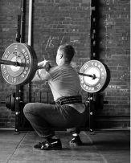
Figure 7-8.
Three views of the front squat. Note the very steep back angle and the
position of the bar over the mid-foot.
The differences in the two movements are entirely due to the bar
position (
Figure 7-9). Any squat that is in balance will keep
the bar over the mid-foot, while it is in the resting position at the
top and as it travels down and up through the whole range of motion of
the exercise. The low-bar squat will thus be done with a back angle of
somewhere between 30 and 50 degrees, depending on individual
anthropometry, to permit the bar’s vertical position over the feet. But
in the front squat, since the bar sits on the anterior deltoids, with
the elbows up and the hands trapping the bar in place, the back angle
must be nearly vertical to keep the bar over the mid-foot and prevent it
from falling off the shoulders. Front squats are missed when the weight
is too heavy to squat or too heavy for the back to stay upright enough
for the lifter to hold the bar in place. In either instance, the bar
falls away forward.
And since the back must stay nearly
vertical, the knees and hips must facilitate this: from the earliest
part of the movement in a front squat, the knees track forward (and out)
and the hips stay under the bar. This combination places the tibias in a
much more horizontal position than in a squat, and this position
significantly changes the mechanics around the knees and ankles, as well
as the hips and lower back.
Figure 7-9.
The relationship between bar position for the two types of squats and
the resulting back, knee, and hip angles.
The position of the bar determines the
best way to drive up out of the bottom. The low-bar squat uses a
forceful, deliberate initial hip drive. The idea is to drive the butt
straight up out of the bottom, which more effectively makes the glutes,
hamstrings, and adductors contract. This hip drive is possible because
the bar is low enough to place the lifter’s back at an angle which
permits it; driving the butt up with the bar on the back just requires
that the chest be maintained in position, preserving the back angle.
Hip drive does not work for the front
squat. When the back is at a more horizontal angle, the hips present a
“surface” – the top of the glutes, the sacrum, and the lowest part of
the lower back – that a coach can touch with the hand and identify to
the trainee. The coach can place his hand on this area and tell the
trainee to “push it up,” a tactile cue that greatly improves the
efficiency of the contraction of the muscles that produce the movement.
The front squat has the hips directly under the bar, or as nearly so as
possible – a position which presents no surface for cueing. The column
of the torso stops at the chest and shoulders, and these, along with the
elbows, are the surfaces that get cued. A focus on the chest, shoulders,
and elbows – driving them up, even as you lower the bar – preserves the
vertical position that is so critical to finishing a heavy front squat.
This focus is in stark contrast to the squat’s, both in position and in
the way the movement is visualized. The differences are great enough
that they should not get confused, but they quite often do, and for this
reason the front squat is best left alone until the squat’s movement
pattern is thoroughly embedded.
Since the front squat has such radically
different form, you might expect that it should produce a different
result than the squat. It does, for the back, hips, and legs. The
vertical back position of the front squat seems like it would result in
a more direct compressional load on the spine than the squat’s more
horizontal angle would produce. This is partially true. The lower back
is in a nearly vertical position, but the upper back has a much tougher
job because the load it is holding up is farther away, forward. The bar
in a back squat, low-bar or high-bar, sits right on top of the muscles
that are holding it up. The front squat places the bar all the way
across the depth of the chest, which in a bigger guy might be 12 or more
inches. This distance is a moment arm that presents a mechanical
challenge to the muscles that maintain thoracic extension (it is very
common for lifters to get pretty sore between the shoulder blades when
first starting the exercise). And since the bar is forward of the hips,
too, there’s also a moment arm against the hips, although probably not
as long as in a squat, and certainly under a lighter load. So while the
lower back is vertically positioned, your thoracic erector muscles have
a lot of work to do. What actually happens is a gradual shift from
compression to moment, from low back to upper back, so things are not as
simple as they may seem. The load on the lumbar spine in the front squat
is friendlier (because it will be lighter) as long as the upper erectors
can maintain position, and for this reason, many people find front
squats to be easier on the low back. But this also means that the front
squat is a less effective back exercise than the
squat.
When you front-squat, don’t worry about
your back; worry about your knees. To facilitate the vertical back, they
have to track forward so that the hips can stay directly under the bar.
This means that the shins will be much more horizontal at the bottom of
the front squat, with a closed knee angle, dorsiflexed ankles, and a lot
more moment force operating along the tibias than there is in a squat.
For most people, these factors will mean contact between calf muscles
and hamstrings at the bottom, and sometimes a rather dynamic loading of
the Achilles tendons and quadriceps. For some people, this closed knee
angle will create enough “wedging” on the posterior knee cartilage that
it can produce instability and injury, a situation that essentially
never happens in a properly
performed low-bar squat. For everybody, the job of opening the knee
angle through a much greater ROM, with muscles working against more
moment force because of a more horizontal shin, is much harder.
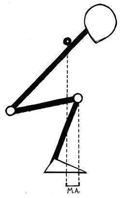
Figure
7-10. The knee position in the front squat,
necessitated by the vertical back position, produces a moment arm along
the tibias, a phenomenon that is not significant in the squat.
(M.A. = moment
arm)
Since the front squat places the knees
so much farther forward than they are at the bottom of the squat, the
hamstrings are not nearly as involved in the hip extension. In the front
squat, the vertical back and pelvic position and the acute angle of the
tibias place the hamstrings in a position where the origin and insertion
points are closer together, so the muscle bellies are shortened. If the
hamstrings are already contracted, they cannot contract much more and
thus cannot contribute much to hip extension. The hamstrings’ role in
the front squat is to maintain the vertical back angle, and their
already contracted position prevents them from contracting much further.
But the hips must still extend, so the
glutes and adductors end up doing most of the job without the help of
the hamstrings. The knees-forward, vertical-back position puts the quads
in a position to do most of the work, since most of the angle to open
will be the knee angle. Three of the four quadriceps cross only the knee
joint, so any exercise that extends the knee will involve most of the
quads every time. The difference in the front squat is that very
noticeable glute soreness is usually the result the first few times you
do it.
So the primary difference between the
squat and the front squat is one of degree in terms of the amount of
involvement from the contributing muscle groups. The knees-forward
position increases the moment force on the tibias, making the mechanics
of knee extension less efficient. At the same time, the contribution of
the hips is diminished by the vertical back position. The net effect is
that you cannot front-squat as much weight as you can squat in the
low-bar position. And the primary reason for the difference is the
position in which the system is in balance – the bar in both cases must
be over the middle of the foot, and the resulting correct back angle is
the one that keeps it there.

Figure
7-11. The differences in the squat and the
front squat are determined by the position of the bar. The resulting
angles and their effects on the biomechanics of the movements are
responsible for the different training effects of the two exercises.
Learning the front squat is best done
from the power rack or squat stand. The bar is set at the same position
as for a back squat, the level of the mid-sternum. The grip is a very
important component of the front squat, more so than in the back squat.
The grip must allow your elbows to come up high enough that your
shoulders can support the load while your back remains vertical during
the movement. The grip width will depend largely on individual
flexibility, and it will vary between trainees and during the individual
trainee’s career as flexibility is acquired through stretching or lost
due to injury. In general, the less flexibility a trainee exhibits, the
wider the grip will need to be. And some people have long forearms
relative to their humerus length and find it hard to elevate the elbows
with what would otherwise be a normal grip width. Adjust your grip width
as needed so that you can raise your elbows high enough to support the
bar. And if you cannot assume a position with at least some fingers on
the bar with the load on your deltoids after stretching and adequate
shoulder/elbow/wrist warm-up, you might not be able to front-squat
productively.
Figure
7-12. Differences in forearm length relative
to the upper arm affect elbow position in the front squat and the clean.
(A) An extreme example of forearm disproportion. (B) Long forearms shove
the elbows down lower. This can be compensated for by widening the grip
(C).
Take the weight of the bar onto your
shoulders, with elbows in the elevated position, shoulders tight, and
chest up, before you unrack the bar. The weight sits on the meat of the
deltoids, and if your elbows are not in the up position before the
weight is unracked, they’ll never completely get there. Your chest must
also be up in a position that reinforces the shoulders, and you place it
there with the upper back muscles. Maintain this position by lifting
both your elbows and your chest as high as possible, from the time you
unrack the bar until you finish the last rep. To cue this movement,
think of touching a hand held above your sternum.
Figure
7-13. The cue for lifting the chest. The hand
is the target.
Take the bar out of the rack and step
back a couple of steps to clear the hooks. (When the bar is loaded,
preferably with bumper plates, a miss will be dropped forward and no
spotters will be involved, so your distance from the rack must be
sufficient that the bar can fall without hitting anything but the
floor.) Your stance will be essentially the same as for the back squat:
heels at shoulder width and toes out at about 30 degrees. After assuming
the stance, lift your chest and elbows, take a big breath to support
this position, and squat. The vertical position of the back is retained
on the way down by forcing the knees forward and out, keeping the chest
and elbows up, and possibly even thinking about leaning back slightly.
The bottom of the front squat is quite easy to feel because some contact
between the calves and the hamstrings will occur.
Figure
7-14. An upright torso for the front squat is
necessary, and this is one way to visualize the situation.
There is no pause at the bottom, and the
ascent starts with an upward drive of the chest, not the elbows. Elbows
stay up, and the chest is driven up, since merely raising the elbows
will not positively affect the upper spine – the whole point of the
“chest up” cue. As the chest is driven up, the hips rise vertically
underneath it, maintaining the vertical position and keeping the bar on
the delts so that it doesn’t roll forward and down. The elbows-up
position traps the bar between the fingers and the neck, but the weight
is on the delts, not on the hands. At no time during the movement is the
back relaxed, at either the bottom or the top; the spine must be
consciously squeezed tight and held in position vertically, more of a
challenge in the front squat due to the bar’s position in front of the
neck and the consequently greater leverage against the upper back.
The differences in bar position and
hamstring function between the front and back squats necessitate a
different set of cues for each version. The back squat depends on hip
drive, and it is cued at the sacrum, as mentioned previously. The chest
and elbows are the focal points for attention in the front squat. “Big
air” is critical to chest position, as is the strength of the upper part
of the spinal erectors, which get sore when this position is trained
hard the first few times. Thinking about leaning back on the way down
may produce a feel for the position if it does not interfere with
balance; most people can grasp this concept without falling backwards.
Some people have proportions that make
the front squat difficult. A short torso with long legs is a bad
combination for good front squat form, and little can be done about
this. In extreme cases, it may be best not to perform the exercise if
correct form cannot be maintained due to an anthropometric problem that
cannot be solved (Figure 7-15).


Figure
7-15. Anthropometry affects the lifter’s
ability to assume an efficient position in the front squat, as it does
with all barbell exercises. The front squat suffers from a short torso
and long legs.
Front squats are usually done in sets of
three, due to the greater sensitivity of the exercise to form
deterioration. Volume is accumulated with multiple sets
across.
Breath control is terribly critical in
the front squat. More leverage against the upper back – the result of
the increased distance of the bar from the spine – results in more
rotational force that must be countered. The support provided by
increased intrathoracic pressure is often the difference between holding
a heavy last rep in place and dropping it on the floor. A big breath
keeps the chest up, the shoulders up, and the elbows up by tightening
the entire upper body. You will need a new breath at the top of each
rep, maybe just a top-off of the previous breath so that you maintain
tightness.
As mentioned previously, a missed front
squat will fall away forward off the shoulders. This is unavoidable
because if you are training hard, you will eventually miss a front
squat, so you might as well prepare for it by practicing it occasionally
during warm-ups. And unless you are used to getting away from the bar as
it falls – putting enough distance between you and the bar that it won’t
hit you on the way down – you might drop it on your knees or lower
thighs. This potentially painful error is usually prevented by most
people’s sense of self-preservation, but it is prudent to have at least
practiced missing the front squat a few times.
One of the problems associated with
front squats is related to bar placement. If the throat is squeezed too
hard by a bar racked too far back on the shoulders, the result can be a
blackout. It is caused by the occlusion of the carotid arteries from the
pressure of the bar. This is dangerous because of the fall that will
occur if you allow yourself to pass completely out before doing
something about it (the blackout itself is harmless). If you feel your
perception start to change – and you’ll know it when it happens – either
rack the bar while you can, or drop it safely on the platform and take a
knee so that you don’t have as far to fall if the blackout continues to
develop. An uncontrolled blackout can cause severe head injuries if you
hit the racks, the bar, or the plates on the way down. To repeat: the
blackout itself is harmless and is corrected by moving the bar away from
the throat a little. Once the buzz diminishes, you can resume the set
with no trouble as long as you have made the correction. But if you
manage to black out once, you will find that you’re more prone to it for
the rest of that workout, so be careful when correcting the rack
position.
One more thing: There is a version of
the front squat, referred to around here as the California front
squat, in which the lifter’s arms are crossed
in front, with the right hand on the left shoulder and vice versa. This
form involves less upper body flexibility than does the standard hand
position, and proportionately less security on the shoulders. It is not
as safe at heavy weights, and since we train with heavy weights, we
don’t use it.

Figure
7-16. The California front squat. This
position is not advised.
The standard position is derived from
the clean, the movement typically preceding the front squat in Olympic
weightlifting, in which the bar is trapped against the shoulders by the
upraised elbows jamming the hands and the bar back
into the rack position. The crossed-arms position relies entirely on the
elbow position and completely loses the stability provided by the hands.
Doing front squats this way is tantamount to just holding your hands out
in front of you with the bar balanced on the delts. And if you need to
drop the bar in the event of a miss, the crossed-arms position makes the
drop awkward and hard to control. There is an argument to be made for
cleaning everything you’re going to front-squat, and California front
squats contribute to the argument.
Bench Press
Variations
The bench press is such a popular
exercise that it’s no surprise there are lots of variations of the basic
version. Selectorized bench press machines that control the bar path
have long been a feature of multi-station machines; bars have been
developed that allow the weight to travel past the top of the chest,
down to where the elbows aren’t supposed to go; machines have been
invented that allow each side to work independently of the other (like
dumbbells, only much more expensive); the pec-deck takes the triceps out
of the exercise. None of these variations are particularly helpful
advances in exercise technology. The bench press is a valuable exercise
because it couples heavy potential load with the motor-control aspects
of barbell training, and these devices remove much of this benefit. The
most valuable variations preserve the benefits while allowing different
aspects of the movement that might need additional work to receive it.
They are of two types: variations in the grip width and variations in
the angle of the shoulder during the press.
Variations in grip
width
The grip can be either wider or narrower
than standard. The narrower the grip, the more inclined toward the
middle the forearms are at the bottom, the sooner the elbows stop
traveling down as the bar touches the chest, and therefore the shorter
the range of motion around the shoulder, even though the bar travels
farther at the top. The less angle the humerus covers as it travels
down, the less work the chest muscles do; the more angle the elbows open
up, the more work the triceps do (Figure 7-17).
Figure
7-17. A comparison of the start positions of
the close-grip and wide-grip bench presses. The distance the bar travels
is at maximum when the lifter’s arms are vertical in the lockout
position.
A medium grip – with the forearms vertical at the bottom – uses the
longest range of elbow motion, and a very wide grip involves a shorter
range of bar
and elbow motion because the
bar touches the chest before the elbows can travel down very far. With a
wide grip, the triceps extend the elbows over a shorter angle, and the
pecs and delts end up doing more of what work gets done. So, bar travel
is at maximum when the arms are vertical at lockout, and elbow travel is
at maximum when the forearms are vertical at the bottom. It is for this
reason that wide-grip benches have the reputation for being a chest
exercise. More weight can be benched due to the shorter range of motion,
and that is done without as much help from the triceps, so the chest
gets most of the work.

Figure
7-18. A comparison of the top and
bottom positions of the close-grip (A), standard-grip (B), and wide-grip
(C) bench presses. The deepest range of motion around the shoulder joint
occurs with the grip that allows the forearms to be vertical at the
bottom. Any other forearm alignment causes the bar to touch the chest
before the full range of motion is reached.
The close-grip version is not really
just a triceps exercise, though it seems to have that reputation. The
large elbow angle the triceps opens provides more stimulation for that
muscle group; the pecs and the delts are performing the same function –
adducting the humerus – but over a different range of motion, since the
humerus is more vertical at lockout but not as deep at the bottom with
the closer grip. Less weight can usually be done close-grip than with
the standard grip due to the decreased contribution of the pecs and
delts out of the bottom, but not much less. Compared with the wide grip,
the narrow grip is much harder in terms of total weight that can be
used, due to the range of motion and less pec and delt involvement,
while the wide-grip bench is a shorter movement that produces less work
and permits heavier weights to be used. It omits some of the triceps
work while relying much more on pecs and delts. The close-grip version
uses lots of triceps, uses the pecs and delts less, and is harder. If
your primary interest is in moving the heaviest weight, as a powerlifter
needs to do, the widest grip legal for the meet is the one to use. If
your interest is in the greatest amount of muscle stressed to cause an
adaptation, a medium grip is the most useful. And if you need to get
more triceps work, a close grip is useful for that.
The greatest effect comes from the
closest grip you can tolerate, and this will be controlled by your wrist
flexibility. On a standard power bar, the knurl has a gap of between 16
and 17 inches, so the edge of the knurl makes a good place to start.
After a bench press workout, take about 50% of your 1RM out of the rack
with a grip set so that your index fingers are on the lines formed by
the edges of the knurl. The exercise is performed the same way as the
standard bench press, with the same breathing, back setup, foot
position, and chest position. Rack the set, wait a little, and do
another set with the grip one finger-width narrower on each side.
Continue to narrow each set of five by one finger-width until your
wrists begin to complain at the bottom, and then widen back out by one
finger-width. You might have to widen your grip a little as the weight
goes up, because what doesn’t hurt with light weights may very well be
painful at heavier weights.
Close-grips are usually used at higher
reps, but this is merely tradition, and there is no reason that they
must be done this way. Since they use a lighter weight than the standard
bench press, they can be done after a bench workout, or they can be used
as a light-day exercise on a separate day. Care must be taken to hold
the bar very tightly; the wrist position makes for a less secure grip
than the conventional grip provides, and it has been known to fail on
the way up when the wrists twitch inconveniently. Close-grips are also
famous for reaching failure rather suddenly, with the last completed rep
giving little indication that the next one will get stuck on the way up.
As a general rule, exercises that depend on less muscle mass or fewer
muscle groups tend to fail more abruptly in their bar path than do
exercises that use more muscles.
Variations in
angle
The other way to usefully vary the bench
press involves the angle at which the humerus approaches the chest,
controlled by the angle of the bench on which the exercise is performed.
The back angle thus determines the quality and quantity of pectoral and
deltoid involvement in the press. There are two variations from
horizontal: the decline, in which the shoulders are lower than the hips;
and the incline, in which the shoulders are higher than the
hips.
The decline press is a rather useless
exercise because the angle of the back in the decline position shortens
the distance the bar can travel, decreasing the amount of work done by
decreasing the range of motion. By decreasing the difficulty, the
decline press increases the weight that can be used in the exercise,
which in turn leads to inflated perceptions of one’s ability – it is
essentially masturbation, much like that which is possible with a
30-degree leg press or a half-squat. The decline press gets recommended
for its effects on the “lower pecs,” but dips perform this function much
more effectively, while involving more muscle mass, more balance and
coordination, and more nervous system activity, as discussed later.
Declines are dangerous because if their point of contact on the lower
sternum gets missed, the next stop is the throat. Couple this problem
with a heavy weight and a lousy spotter, and you might have a really,
really bad “chest” workout.
Figure
7-19. A comparison of the ranges of motion of
the bench press and the decline bench press.
The incline bench press, however, can be
a useful variation. If you are doing both bench presses and presses,
then everything that the incline bench press accomplishes is redundant;
there is no aspect of shoulder and chest work that these two exercises
do not more than adequately cover. “Upper pecs” are quite thoroughly
involved in the press, and the bench press uses the whole muscle belly,
so there is no need to try to isolate this portion of the chest
musculature. But many sports involve the use of the arms at an angle
somewhere above 90 degrees from the torso, and some people believe that
this angle should be specifically targeted for resistance training. The
incline bench press does this, albeit at the cost of the body’s being
supported at this angle while the work is being done, something that
never occurs during the sports in question (see the discussion of this
in Chapter 3).
Figure
7-20. The position of the bar in the incline
bench press, directly over a point just below the point where the
collarbones meet the sternum. The bar will be very close to the chin on
the way down.
But limitations are what make them
“assistance” exercises – if they were perfect, they’d be major exercises
and have their own chapters. The incline is useful in some cases, as
long as it’s done correctly; but it is easy to cheat, and pointless when
cheated. Most commonly, the effects of the angle of incline are negated
when the trainee raises his hips up off of the incline bench, thus
making his torso more horizontal. If a horizontal bench press is what
you want to do, just do the bench press. Indeed, this is a good reason
to just bench press and press. When doing inclines, people often allow
their greed to overwhelm their sense of honesty, and they try to lift
too much weight for the limitations of the inclined position, thereby
causing their hips to bridge just to get the last rep back in the rack.
The incline is an assistance exercise – don’t use so much weight that it
has to be cheated, because this defeats the purpose of doing it. Keep
your butt on the bench.
Most incline benches are made to be
adjustable so that the incline can be varied according to individual
preference. They are made with support uprights for the bar, like a
bench press bench, and the supports are also adjustable to enable the
bar to be unracked at a position that matches the angle of the bench.
(Fixed-position incline benches are available from some manufacturers,
with neither the angle nor the uprights adjustable.) The incline bench
also has a seat built into the frame so that trainees can maintain a
secure position without their feet becoming too critical to the lift. It
would actually be better if the feet were more involved, since this
would extend some, although not all, aspects of the kinetic chain down
to the floor. You occasionally find very old benches built this way,
with a foot plate at ninety degrees to the bench angle at the floor, but
they are not the industry standard now.

Figure
7-21. A useful type of incline support
bench.
When doing the exercise, select a back
angle of between 30 and 45 degrees from vertical. Flatter angles are too
similar to the bench press, and steeper angles are too similar to the
press, with the disadvantage of having the back angle held immobile in a
position that is very hard on the shoulders. One reason the press might
be a better choice is that the stress of a tough rep can be accommodated
by the natural adjustment of the back position, whereas the incline
bench nails you into a fixed position that might exceed the capacity of
the fatigued shoulders.
The uprights should support the bar at a
height that allows the lifter to take it out, complete the reps, and
rack it with a minimum of elbow extension but no danger of missing the
racks. This means that the uprights should be set as high as possible so
that the lifter’s elbows are nearly straight, and so that when they are
straightened, the bar clears the hooks by a couple of inches. If the
supports are too low, too much work has to be done getting the bar out,
and more important, too much work will have to be done getting it back
in the rack at a time when lots of control might not be possible. The
easiest rack position will vary with your bench, and finding it will
involve some trial and error.
Most of the differences between the
incline and the bench press are positional. The two are basically
executed the same way. The chest is up, the back is tight, the drive is
to the point of focus on the ceiling, the feet are planted to connect
firmly with the floor, and “big air” supports the chest. The position of
the shoulders and back against the bench, the elbow position, the eye
gaze direction, breath control, grip, and foot position are all the same
for the incline as they are for the bench press, while the differences
are related to the angle. The shoulders are squeezed together for a
tight position, and the back is arched into a brace between the seat and
the point of contact on the shoulders. The elbows stay directly under
the bar for the whole movement; they control the bar path as they do for
a bench press. The eyes focus on the stationary reference of the
ceiling; they do not follow the bar. The breath is held during each rep,
with breathing occurring between reps at the top. The grip is the same
as that used for the bench, with the thumb around the bar, which rests
on the heel of the palm. The feet are firmly planted against the floor
as a brace for the position against the bench. The bar path will be
straight, but instead of touching the mid-sternum, the bar will touch
right under the chin, just below the sternoclavicular articulation (the
point where the collarbones and the sternum meet). The range of motion,
through an almost perfectly vertical bar path, is slightly longer than
for a flat bench press. The elbows’ position directly under the bar will
place the point of contact on the chest, at a place that is even with
the shoulder joints. The humeral angle – which does not approach 90
degrees of abduction – does not produce any shoulder impingement, as the
bench press does.
The starting position, at lockout over
the chest, will be the point where the bar is in balance directly above
the shoulder joints and where the locked-out arms are vertical, just as
in the bench press. But because of the angle, the distance between the
rack and the start position is much shorter for the incline, so the bar
is actually much easier to unrack and re-rack than it is for the bench
press. For this reason, the experienced lifter might find that a spotter
is less important for the incline, although this statement should not be
construed as permission to be stupid.
If the incline is to be spotted, the
equipment must be compatible. Most good benches have a spotter platform
built into the frame. This allows the spotter to be sufficiently above
the lifter such that if a problem occurs, the spotter can safely pull
the bar up from a position of good leverage close to the bar. A spotter
standing on the floor cannot be depended on to help, and if heavy
weights are to be used, the equipment must allow for correct spotter
position. Likewise, if you feel as though two spotters are necessary for
the weight you’re doing, you should either use a lighter weight or do a
different exercise, because two spotters cannot safely spot an incline,
and heavy 1RM attempts on the incline bench press demonstrate a poor
understanding of the purpose of assistance exercises.
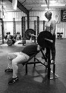  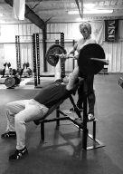
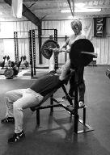
Figure
7-22. The incline bench press. Note the
vertical bar path and the position of the bar over the
clavicles.
Deadlift
Variations
We’ll discuss four main variations here:
the RDL, the SLDL, deadlifting from blocks, and the goodmorning (both
flat-backed and round-backed).
Romanian
deadlifts
Once upon a time, as legend has it, the
incredible Romanian weightlifter Nicu Vlad visited the U.S. Olympic
Training Center. Vlad was strong, probably as strong as any human being
has ever been at a bodyweight of 220 pounds; word on the street has it
that he front-squatted 700 pounds for a double. So when Vlad performed
an exercise that no one had seen before, it quite naturally got a lot of
attention from people not as strong as he was. The exercise involved
taking the bar out of the rack from the hang position, stepping back to
clear the rack, and then lowering the bar down to the mid-shins and
raising it back to the hang position. This movement looked like a
deadlift, but one that started at the top instead of the bottom, so
naturally it had to have a new name. The term “Romanian deadlift” has
been applied to it since then, although its name translated from the
Romanian is probably something different (if it even has a Romanian
name; the exercise has been developed since that day entirely in the USA
and may simply have been Vlad’s way of dealing with unfamiliar
equipment). It is referred to by the initials “RDL.”
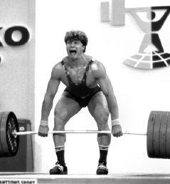
Figure
7-23. The great Nicu Vlad: the importer, as
legend has it, of the Romanian deadlift. Vlad was pretty damn strong.
The RDL has two important
characteristics that distinguish it from its parent exercise. The first
is that it uses very little quadriceps because the knees start off
nearly straight – unlocked, but not very – and pretty much stay that
way, so the quads don’t have an opportunity to actively extend the knees
during the movement. The RDL is specifically intended as a hip extension
exercise, and the quads are not supposed to be involved except to
isometrically anchor the knee angle from the anterior. All the work that
occurs through the bottom of the range of motion and that would normally
be shared between knee extensors and hip extensors is done only by the
glutes and the hamstrings. The lower back muscles keep the lumbar spine
locked in line with the pelvis. The hamstrings, acting at their
attachments on the ischial tuberosities, cause rotation around the hip
joints when they pull the bottom of the pelvis and the back of the knees
together, making the hamstrings and glutes the prime movers during the
exercise.
Figure
7-24. The function of the hamstrings in the
RDL is essentially all hip extension, both eccentric and concentric.
But more important is the difference in
the fundamental nature of the two movements. The deadlift starts with a
concentric contraction as the bar is pulled from the floor, and the
eccentric phase is not really emphasized because the lift is essentially
over after it is locked out at the top. In contrast, the RDL is like the
squat in that the movement starts with an eccentric contraction, the
“negative,” which precedes the concentric. The bar starts from a
position of knee and hip extension, the bar is lowered down into
flexion, and a stretch reflex initiates the concentric contraction back
into extension. Any concentric contraction is stronger when it is
preceded by this stretch reflex, due to increased efficiency in motor
unit recruitment and to the ability of the elastic components of the
muscles and connective tissues to store elastic energy developed during
the eccentric lengthening of the muscle bellies. A jump is the best
example of this principle; every time a jump of any kind is performed,
it is preceded by a short drop of the hips and knees that creates a
stretch reflex in the muscles about to contract for the jump. It takes a
great effort of will to jump without this drop – it is such a normal
part of human movement that it is very difficult to exclude. The stretch
reflex also explains why bouncing the second through fifth reps of a set
of five deadlifts off the floor is so popular. The majority of weight
room exercises can be “cheated” with the use of a cleverly applied or
exaggerated stretch reflex. I myself have “curled” 205 in this
way.
But for the RDL – and the squat, the
bench, the jerk, and maybe the press, depending on how it’s done – the
stretch reflex is not cheating but is an inherent part of the movement.
The bounce out of the bottom of the RDL enables rather heavy weights to
be used in the exercise despite the fact that the quads have been
excluded from helping with the movement. RDLs take advantage of the
stretch reflex just to the extent that it affects the hip
extensors.
The RDL starts in the rack with pins set
at a position a little lower than the level of the hands in the hang
position. This rack position allows for an easy, safe return to the rack
in the event of a slipping grip that might lower the bar before you rack
it. With a clean-width grip, take the bar out of the rack and step back
just far enough to clear the pins. Assume the same stance you use for a
deadlift, with heels 8–12 inches apart, toes pointed slightly out. Raise
your chest, and focus your eyes on a point on the floor about 10 feet in
front of you.
The whole point of the RDL is that the
back stays locked in extension while the hip extensors work. Unlock your
knees so that a little tension comes into the quads, but no more than
enough to lower the bar an inch or two down the thighs. Very little
knee-angle change should occur, although the knee position over the feet
will change slightly. This position will place your knees above a point
about halfway between the toes and the instep. Lift your chest up and
arch your low back into a tight lock, trying to maintain this position
for the whole movement. Start the bar down your thighs by shoving your
hips back, allowing your hips to come into flexion with the bar never
leaving the skin of the legs. At the same time, push your shoulders
forward, out in front of the bar, to the familiar pulling position. As
the bar approaches your knees, shove them back, too, shifting the shins
into a vertical position. Drop the bar down past your knees, keeping it
in close contact with the shins, and go as low as possible without
unlocking your lower back. Stop just before
your back begins to unlock – a position you will identify on the first
few reps – and start back up. The stretch at the bottom should help
change the direction of the bar without any pause. On the way up, keep
the bar in contact with your legs and keep your chest and back locked in
position. Breathe at the top, taking a big breath for every
rep.


Figure
7-25. The Romanian deadlift.
The emphasis on driving everything back
is very important; the use of the hips instead of the knees is what
engages the hip extensors and excludes the quads. It helps to think
about the weight shifting back to the heels, the knees moving back, the
bar being shoved back to stay in contact with the legs, and the butt
moving back; in fact, everything moves back except the shoulders, which
slide forward, out over the bar. The shins must come to vertical before
the bar reaches the knees, and the knees must never move forward at all
after the initial unlocking. Any forward knee movement puts the quads in
a position to contribute to the movement by extending the knees on the
way back up, canceling out the desired hip-extension effect.
Figure
7-26. The progression from top to bottom in
the RDL. Note that the hip-angle change is predominantly responsible for
the ROM of the exercise.
The most common error will be the
knees-forward problem. You will be tempted to relax the tension on your
knees at the bottom; the hamstring tension builds all the way down and
is not relieved until the muscles are shortened, either by having done
the work of extending the hips at the top or by your relaxing your knees
forward at the bottom. If you shorten the hamstrings by allowing the
knees to drop forward – thus flexing the knees and causing the two ends
of the hamstrings to come together, taking the tension off from the
bottom – then the quads will do the work that the hamstrings should have
done when they extend the knees during the recovery to the top.
Remember from the discussion of pulling
mechanics in the Deadlift chapter that the shoulders stay in front of
the bar. This means that the arms are inclined back from the shoulders
at a slight angle, with the lats pulling back on the humerus to keep the
bar over the mid-foot. The lower the bar goes down your legs without
your knees bending, the more angle your arms must assume to keep the bar
over the mid-foot, and the more work the lats must do to maintain this
position. At a very low position on the shins, this angle becomes quite
extreme, contributing to the difficulty involved in doing a strict RDL
very far below the knees. In fact, if you touch the floor at the bottom
of an RDL, you are probably doing it with a fairly light
weight.
Also common is the failure to hold the
back rigid in absolute extension. One of the main benefits of the RDL is
the isometric work it provides for the erectors, as they hold the spine
rigid while the hamstrings extend the hips. This back position is rather
hard to hold, and the lifter needs a lot of concentration to keep the
chest up and the low back arched with no looseness, while sliding the
hips back, the knees back, the bar back, the heels down, and the
shoulders forward. For a slow exercise, the RDL is technically difficult
because it is very easy to do wrong. If the back rounds or the knees
come forward, less work is being done by the targeted muscle groups and
the movement feels easier. But done correctly, with the back locked into
rigid extension and no knee extension involved, the RDL is perhaps the
best assistance exercise for deadlifts and cleans because it works the
very things that cause heavy deadlifts to be missed.
The best cues for good form on the RDL
are “chest up,” “arch the back,” and “knees back,” with an occasional
reminder to keep the weight off the toes. The chest cue will remind you
to keep the thoracic spine in extension, while arching the back usually
gets interpreted by most people as a low-back cue. The knee cue keeps
the quads out of the movement, but it can also cause the bar to fall
away from the legs, and you might need to cue the lats by thinking “push
the bar back.”
When you’re doing heavy RDLs, use a
double-overhand grip. The shoulder asymmetry that results from an
alternate grip is not desirable for this exercise, and the lats cannot
effectively pull the bar back into the legs if you are using a supine
hand on one side. The weights that will be used for heavy RDLs are not
really heavy relative to the deadlift, with most people being able to
use between 65% and 75% of their 1RM deadlift for the exercise, so using
a plain old double-overhand grip will not usually be a problem. Use a
hook grip or straps if your grip strength is insufficient, which it
should not be at 65–75% of 1RM, but both your hands must be in the prone
position. Being an assistance exercise, RDLs are done in the range of
5–10 reps.
Stiff-legged
deadlifts
The stiff-legged deadlift (or SLDL) is
possibly a more familiar exercise in most gyms, as a result of the fact
that many people do the deadlift wrong and it ends up looking this way
accidentally. The SLDL is essentially an RDL off of the floor – without
the stretch reflex but with the higher hips, more horizontal back angle,
and more vertical shins of the RDL. Since the SLDL starts on the floor,
it involves a longer range of motion than does the RDL, which is
supposed to stop at the point where the low back unlocks due to
limitations in hamstring extensibility. Most people can’t do a strict
RDL all the way down to the floor with the bar loaded with 17-inch
plates, so you will have to do the SLDL with enough knee bend to allow
your back to get into a good position to start. The amount of knee bend
will obviously depend on individual flexibility. The point of the
exercise is stiff legs – knees extended as much as possible and hips
higher than in a deadlift, with the low back flat in the start position
– so use as little knee bend as possible.
Figure
7-27. (A) The conventional deadlift start
position and (B) the stiff-legged deadlift start
position.
Take your regular deadlift stance, with
the bar directly over the mid-foot. Use the regular double-overhand
clean grip, for the same reasons mentioned above for the RDL. Unlock
your knees and set them in position hard, as straight as your
flexibility permits. Raise your chest, take a big breath, and pull. The
SLDL is essentially a deadlift done according to the five steps outlined previously, but without Step 3, the
dropping-the-shins-forward-to-the-bar part. This means that the bar
leaves the floor from over the mid-foot but is still in the air while in
front of the shins. When the bar is just above your knees, it comes onto
your legs, and the pull is then locked out like a regular deadlift at
the top. Again, each rep is replaced on the floor, reset, and pulled
from a stop; it is a deadlift, not an RDL, and each rep starts from a dead
stop.
 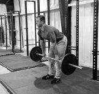
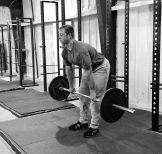
Figure
7-28. The stiff-legged deadlift.
Both SLDLs and RDLs are versatile
exercises and can be applied to your training in many ways. They can be
done in a variety of rep ranges, depending upon the desired effect. When
they’re used as a substitute for the deadlift on a light day, sets of
five work well; in fact, SLDLs and RDLs can be used for sets across,
unlike the deadlift, since they do not produce the stress that the full
heavy movement is known for. For back-off work following deadlifts, they
can be used for sets of 8–10 reps to accumulate extra volume. And
high-rep sets of 20 RDLs can be an interesting addition to your
training.
Despite the fact that both the RDL and
the SLDL can produce extreme hamstring soreness in the short term that
can interfere with the normal range of motion of the knees, both
exercises provide an excellent way to increase the extensibility of the
hamstrings over time. They are excellent stretches and are often used
with light weights as warm-ups for the deadlift and the
squat.
Deadlifting from
blocks
Another variation on the deadlift is to
do the exercise while standing on blocks. By adding their height to the
range of motion, the blocks increase the amount of work done (you can
get the same effect by using plates with a smaller than 17-inch
diameter). The blocks also add more knee extension – and therefore more
quadriceps – to the exercise. Because the bar is farther away from
lockout, the lifter needs more knee and hip flexion to assume the start
position at the bottom, and the more acute angles require more hamstring
extensibility for the lifter to assume the start position with an
extended lumbar spine. These requirements make it more difficult for
inflexible people to get in a correct start position, so not everybody
can do this exercise. Be aware that for obvious reasons, a deadlift on
blocks is an even more stressful movement than the full deadlift, so
treat it with respect. No sets across with max weights, because
deadlifts on blocks are an assistance exercise; use them at sub-max
loads to accumulate work and to make the deadlift easier off the floor.
Goodmornings
The goodmorning is sometimes thought of
as a squat variation since the bar is taken out of the rack, as in a
squat, and carried on the traps. But since the goodmorning functions as
a back and hamstring exercise, with no more knee extension than an RDL,
and with lots of elements of pulling mechanics in the movement of the
bar, a case can be made for considering it a deadlift variation.
Goodmornings get their name from the rather tenuous similarity between
their appearance and that of a subordinate individual greeting his
superiors in the a.m. They are an old weight room exercise, largely
unused today, but they are worthy of consideration as a way to
strengthen your pull.
In a goodmorning, the bar sits on top of
the traps, as it does in a high-bar squat. Basically, you perform a
goodmorning by bending over with the bar on your neck until your torso
gets to parallel with the ground or lower and then returning to an
upright position. The movement is similar to that of the Romanian
deadlift in that the whole thing is essentially a hip extension that
begins with an eccentric contraction – think of it as an RDL with the
bar on your neck.
In the RDL, as with a pull, the bar
stays over the middle of the foot, with a vertical bar path; in the
goodmorning, the bar makes an arc as it is lowered. The arc occurs
because the distance from the bar to the hips along the back is usually
longer than the distance from the hips to the unlocked knees, and when
the bar is lowered, it travels forward (Figure 7-29). This arc produces the intentional
departure of the bar from a position of balance above the mid-foot, thus
creating a moment arm between the bar and the balance point and using
that as an aspect of the resistance in the exercise, as a heavy barbell
curl does. As the weight gets heavier – and as the resulting center of
mass of the lifter/barbell system gets closer to the bar – the bar path
moves closer to the mid-foot.
There are two ways to do goodmornings:
flat-backed and round-backed. The flat-backed goodmorning places the
hips a little farther back at the bottom of the movement than they are
at the bottom of the RDL (since the bar is on top of the traps instead
of hanging below the scapulas), even though the bar is in front of the
toes. The round-backed version allows both the bar and the hips to stay
closer to the mid-foot balance point. The difference is in the effective
length of the back – the flexed spine is effectively “shorter” than the
spine in rigid extension – and thus the two movements differ in the
length of the moment arm they create between bar and
hips.
Figure
7-29. Two versions of the goodmorning.
Flat-backed goodmornings are the most
like the RDL. The knees are unlocked, the chest is up, the low back is
arched, and the bar is on the traps, with the hands pulling it down into
the neck to keep it from rolling or sliding up at the bottom. (It is
important to stabilize the bar against your neck and keep it from
sliding, especially when you’re using a bar with a center knurl; it will
most assuredly dig a ditch in your neck if it moves.) The movement
basically consists of sliding your hips back to lower the bar down as
far as hamstring flexibility permits before your low back rounds. The
idea is to keep the back in extension the whole trip down and up, and
the parallels to the RDL should be clear. Your flexibility will
determine your depth, and the goodmorning improves hamstring length;
there is not a much better stretch than a strict flat-backed
goodmorning.
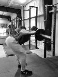
Figure
7-30. The flat-backed version of the
goodmorning.
The round-backed goodmorning is a
completely different exercise. We have many times described the
efficient and safe back position as “normal anatomical position” –
thoracic and lumbar extension. This position is the best way to load the
intervertebral discs and the most efficient way for force to be
transmitted along the torso. But there are many situations, either at
work or in many sports, where lifting must take place under
circumstances that prevent an ideal extended-spine position, and it
makes sense for post-novice lifters to train for this eventuality.
Strongman competitions, for example, involve stone lifting, where a
large stone that cannot be placed in a position that allows the
competitor’s spine to be extended must be lifted off the ground to an
upright position. The trip from the ground to hip and knee lockout has
to be done with the back in flexion. Or a situation may arise “in the
field” that requires you to lift an object – perhaps a fellow soldier in
85 pounds of kit – whose shape has no respect for your finely developed
sense of correct kinematics.
Figure
7-31. Round-backed lifting trains the back
for situations where perfect lifting mechanics are not possible. Stone
lifting is a good example of this.
If spinal flexion is the position that
must be used, the big held breath is the mechanism that must stabilize
it. The intervertebral discs are best positioned to bear a compressive
load when they conform to their normal resting geometry. But lifting a
load from the ground is not primarily compressive until the final stages
of the pull, when the back becomes erect. Moment forces with a
rotational or shear component are the primary stresses on the back as
the load comes off the ground. If the spine is in flexion and its
rigidity in flexion can be maintained, the submaximal loads normally
encountered in a field situation can be safely handled, especially by a
strong lifter used to handling much heavier weights. The same Valsalva
maneuver used in all barbell exercises provides stability and protection
for the spine in the less-than-optimal positions often encountered
outside the gym.
Figure
7-32. Handling an awkward object will not be
so much a matter of the heavy weight, because heavy weights cannot be
handled from a position of bad mechanics. The issue will be spinal
stability in the awkward position. For a flexed spinal position where
the mechanics cannot be improved, the best protection for the spine is a
solid Valsalva maneuver.
Some round-backed lifting prepares you
for this inevitable situation, and when planned and executed on your
terms instead of the universe’s, it can be made a productive adjunct to
normal pulling and back work. The round-backed goodmorning deliberately
employs less-than-optimum spinal mechanics in order to strengthen the
back against the inevitable occurrence of bad mechanics during a
fatigued deadlift attempt or a normal day at work. It is a relatively
safe way to introduce this position in the context of a controllable,
increasable barbell exercise.
Round-backed goodmornings are probably
better than round-backed deadlifts because of the tendency to use
lighter, safer weights for them and because of the lack of interference
with the correct movement pattern in a lift that is already prone to
errors. But since round-backed movements would have to be considered
advanced exercises, and therefore not really indicated for inexperienced
lifters, the advantages of round-backed goodmornings over round-backed
deadlifts are not really germane; advanced lifters should have no
trouble separating two styles of deadlifting from each other. The
important points are that round-backed lifting is not always bad,
because it is inevitable, and that goodmornings done this way are a good
introduction to this aspect of conditioning for sports and for
life.
Take the bar out of the rack as you
would for a flat-backed goodmorning, take a big breath, and start down
by dropping your hips back. Immediately drop your chest, rolling it down
toward your knees. It is usually possible to go lower than the
flat-backed form permits, since adequate hamstring flexibility to
maintain lumbar extension is not the limiting factor in this version.
Maintain the flexed back position all the way down and back up, using
your air to support the curve. Come back up by first lifting your back
and then shoving your hips forward, and finally by raising your chest to
coincide with the return to the starting position. As with flat-backed
GMs, higher-rep sets of 8 to 10 work well. Round-backed goodmornings are
an optional, advanced exercise. No one’s feelings will be hurt if you
don’t do them at all, but if you use them, do them right, and light.
Figure
7-33. The round-backed goodmorning.
The goodmorning allows for more direct
stress on the hip extensors. But you must remember that this weight is
sitting on
your neck. Any work done by the hip extensors
must be transmitted along the spine, and the leverage against the
smaller cervical and upper thoracic vertebrae will be very high. Be
careful about using lots of weight and generating high velocities; the
goodmorning is an assistance exercise, not a primary lift, and it must
be respected for both its usefulness and its potential for injury. The
smartest of the strongest men in the world never use more than 225
pounds for the goodmorning, and since it is an assistance exercise, they
use sets of 8 to 10 reps. Done correctly, goodmornings make the back
stronger; done incorrectly, they can make the back injured. Use good
judgment when deciding how much weight to use. There will never be a
reason to use more than 35% of your squat for sets of 8–10, and there is
no reason to do them at all until 35% of your squat is 95 pounds.
Press
Variations
Two main variations here: the
behind-the-neck press and the push press.
Behind-the-neck
presses
The first thing that usually comes to
mind when people think of different ways to press overhead is the
behind-the-neck version, along with its close relative, the Bradford
Press, which involves changing the bar position from front to back
during the press. When the bar is behind the neck, the shoulders are put
in a position that is not particularly advantageous under a heavy load.
This position is right at the edge of the shoulder’s range of motion and
puts a lot of stress on the ligaments that hold the shoulder together.
The shoulder (or glenohumeral) joint is
formed by the articulation of three bones: the clavicle or “collarbone,”
the scapula, and the humerus. The head of the humerus is the ball, and
the glenoid
fossa of the scapula is the socket of this
ball-and-socket joint. The glenoid is a rather stingy little cup, not a
nice deep socket like the acetabulum of the pelvis, and it depends much
more on ligamentous and tendinous support for its integrity than the hip
does. The net effect of this arrangement is a joint that is less stable
at the edge of its range of motion than might be desired. The
behind-the-neck press places the humeral head in just about the worst
position it can assume under a load. If this exercise is to be used in a
program safely, it has to be done with such light weights that it
becomes almost a waste of time if strength is the goal. It has been done
with heavy weight by big strong men, but none of them got that way with
this exercise.
Push
presses
A better exercise is the push press. It
is more than just cheating the press with your legs. The push press uses
momentum generated by the hips and knees to start the bar up, and then
uses the shoulders and triceps to go to lockout, as in a normal press.
The movement begins with a stretch reflex, where the knees and hips
unlock, you drop down a little, and then you drive back up – the
extensors lengthen a little and then immediately contract forcefully
into lockout. This sharp extension provides enough drive to get the bar
off the shoulders and started on its way up. It is not really a “push”
so much as it is a bounce, since the knees and hips do not unlock and
then stop in the unlocked position. It is exactly as though you are
trying to bounce the bar up off of your shoulders by using your hips and
legs.
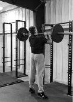 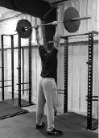 
Figure
7-34. The push
press.
This bounce requires that the bar be
resting on the meat of the deltoids when this upward force gets there.
If the bar is being held in the hands – resting on the palms or fingers
instead of seated firmly on the shoulders – then the force of the bounce
gets absorbed in the elbows and wrists instead of being transmitted to
the bar. This may mean that the grip for a push press is a power-clean
grip, wider than you use for a press, since longer forearms make the bar
harder to set on the delts with a standard press grip. The solid
connection between the bar and the shoulders allows the full effects of
the hip and leg drive to carry the bar on up. A full breath before each
rep braces the torso and makes the push more solid.
More weight can be lifted with a push
press than with our press technique in chapter three, and certainly more
than with a strict press, and for this reason, a heavy set of presses
might get finished with a push press or two. A better approach is to
keep the two exercises as separate as possible in your mind, choosing
your work weights carefully enough that a set of five presses does not
turn into a set of two presses and a triple push press. After finishing
your last set of presses, you might add extra work in the form of two
heavier sets of push presses. Or better yet, you could use push presses
as a completely separate exercise on a different day, either after bench
presses or as their own primary upper-body exercise.
In addition to the same problems that
affect the press, the push press has its own problems that derive from
the involvement of the knees and hips. The most common error is the
tendency to dip forward onto the toes during the push. The bounce must
come from the whole foot, not from the toes, or the lifter/barbell
system gets displaced forward. If the dip has a forward component, the
motion of down-and-forward turns into up-and-forward, instead of
straight down and straight up. You will then have to “chase” the bar as
it goes forward on the way up, diluting your shoulder drive.
Figure
7-35. The tendency to dip to the toes instead
of staying flat-footed introduces a forward component into the upward
motion. You can control this motion by thinking about keeping the weight
on your heels during the dip. A balanced dip distributes the stress
evenly between the hips and the knees.
Correct this error by making sure your dip is to your mid-foot, and if
you are dipping forward, the easiest way to ensure a straight dip is to
raise your big toes inside your shoes before each rep. Your weight will
shift back toward your heels, and once you get used to the way this
feels, the problem will stop without your having to cue the big toes for
each rep. This is a handy trick to learn, especially if you have
entertained the possibility of any Olympic weightlifting; the dip that
precedes the split jerk is essentially the same as the push-press dip,
and if you correct it now, it will not be a problem later.
Push presses can be hard on the knees,
believe it or not. The knee extensor tendons are subjected to some
rather high forces during heavy push presses, and this is especially
true if you are dipping to your toes. Stay out of your knees as much as
possible to minimize the abuse. Knee wraps may help, but good form helps
the most.
Just so you won’t think they’ve been
forgotten, assistance exercises for the power clean fall squarely in the
bailiwick of Olympic weightlifting and are outside the scope of this
book. Those of you who are interested are encouraged to contact a
competent weightlifting coach and develop a relationship with the sport.
There is no better way to use barbells to train for power
production.
Ancillary
Exercises
Not every assistance exercise
necessarily duplicates a portion of a parent movement. There is no
chin-up-like motion in any of the five major lifts, yet chins are a
terribly useful exercise for lifters at all stages of training
advancement. Chin-ups are multi-joint, they involve the movement of the
whole body, they work many muscle groups, and they depend on a complete
range of motion and correct execution for their quality – all
characteristics of the major exercises. In contrast, it is difficult to
do a wrist curl wrong, and really, who cares if you do? Good ancillary
exercises contribute to functional movement the same way the major lifts
do: they work several joints at one time through a range of motion that,
when made stronger, contributes to performance in sports and
work.
Ancillary exercises have traditionally
been performed for higher reps than the core lifts are. This is not
necessarily a hard-and-fast rule; some of these movements are very
valuable as strength exercises in and of themselves. Some lend
themselves better to this than others: weighted chin-ups and dips are
quite useful at lower reps and heavy weights, whereas heavy weighted
back extensions can be rather hard on the knees. Each exercise has its
own specific applications and fits into each individual trainee’s
program in different ways.
Chin-ups and
pull-ups
Possibly the oldest resistance exercise
known to the human race is the pull-up. Arboreal primates use this
movement in the process of locomotion, and ever since we’ve been
standing on the ground, it’s been difficult to resist the temptation of
grabbing a branch overhead and putting our chins up over it. And you
should be strong enough to do that; the pull-up is not only a good
exercise but also a very good indicator of upper-body strength. If you
can’t do very many chin-ups, your press and bench press will increase as
you get stronger on this very important exercise. And that is why it is
the only ancillary exercise included in the novice
program.
Chin-ups and pull-ups are most famous
for their effects on the latissimus dorsi muscles (the “lats”), but they
are equally important for the other muscles of the upper back – the
rhomboidius, the teres major, the serratus groups, and the rotator cuff
muscles, as well as the forearms and hands. Chin-ups even work the pecs
a little, if done from a diligent dead hang, and abs, if enough reps are
used to get them fatigued.
Figure
7-36. The chin-up (top
pair, A) uses a supine grip,
and the pull-up (bottom pair B), done in the
power rack, uses a prone grip.
In this book, the term “pull-up” refers
to the version of the exercise with the hands prone, while “chin-up” or
just “chin” refers to the version done with supine hands. The major and
significant difference between the two is the biceps’ involvement in the
chin-up and the lack of it in the pull-up. The addition of the biceps
makes chin-ups a little easier than pull-ups, as well as adding the
aesthetic elements of arm work to the movement. Pull-ups are harder, and
they probably emphasize lat involvement more since the absence of the
biceps means that something else must do its work. Because of the
pronation, pull-ups also might aggravate the elbows for a lifter who is
not very flexible. The prone grip shortens the distance between grip and
shoulders; the supine grip tends to increase this distance if you don’t
pay attention to keeping it close (Figure 7-37, B). So the pull-up might seem easier
for some people if they stay too far away from the bar on chin-ups. Once
your strength permits, you can add weights to strict chins and pull-ups
for increased workloads. The more your trunk moves, the more trunk
muscles are involved, and this is why abs can get sore. But any version
of the chin-up or pull-up, where the whole body moves, is better than
the machine version of the exercise, the “lat pulldown,” in which only
the arms move.
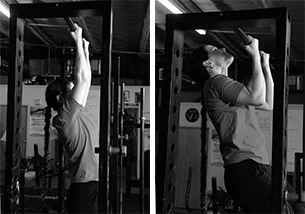
Figure
7-37. A correct chin-up starts with straight
elbows and ends with the chin well over the bar, as high as possible. An
incorrect chin-up displays an incomplete range of motion, starting with
bent arms (left) or ending under the bar
(right).
Chin-ups are a better introductory
exercise than pull-ups, and perhaps a better exercise altogether because
they involve more muscle mass. We’ll use a bar set at slightly above the
level of the up-reached fingertips while we’re standing flat on the
floor. When you are hanging from this level, your toes should just touch
the floor. This is, of course, an ideal height, and your equipment may
be lower or higher. The crossbar at the top of a power rack works well,
as might a bar set high in the rack pins. If you are fortunate enough to
train in a gym enlightened enough to have provided chin bars, enjoy
them, for they are not common. A bar that is 1¼ inches in diameter feels
the best in most hands, unless they are unusually small. But it is not
hard to make do, and most training facilities will have a place for the
innovative trainee to chin.
In the chin-up grip, your palms are
facing you, about shoulder width apart. Grip width can vary several
inches depending on elbow flexibility; the more easily the hands can
supinate, the wider the grip can be. The wider grip increases supination
and biceps involvement. The wider the grip is, the greater the external
rotation of the humerus is. The closer the grip is, the more internally
rotated the humerus, the more abducted the scapulas, and the less
involved the scapula retractors and posterior delts are. Grip width may
not be a practical variable to manipulate due to the joint stress it
causes at the extremes of wide and narrow, but since grip width affects
the way the shoulders interact with the load, some shoulder injuries can
be affected by grip width. A shoulder-width grip is good for our
purposes and presents no problems for most people. Chalk makes for a
better grip and fewer calluses, and using it is a necessary. A knurled
or rough bar destroys the hands and therefore adversely affects the rest
of your training.
The movement itself is obviously simple:
take your grip, and pull your elbows “down,” which results in your
leaving the ground. Each rep starts from a full stretch at the bottom,
with elbows straight and scapulas stretched up, and is complete when
your chin clears the bar. A more honest approach might be to touch your
chest to the bar, but we’ll count the rep if your chin clears the bar
with your face forward, and your head not back. Try to stay as close to
the bar as possible. The Gold Standard rep is done from a dead hang,
with a slight pause at the fully stretched-out bottom. It is terribly
common to see partial chins, which should be called “foreheads” or
“nose-ups” and are usually accompanied by less-than-straight elbows at
the bottom. For a high-rep set, you can use a stretch reflex at the
bottom as long as the bottom is actually The Bottom. In this case,
breathing will consist of a quick breath at the top of
each rep. For a higher-rep set to failure (maybe 12 or more reps),
you’ll find that the first two-thirds to three-fourths of the set will
be rebounded, and the last reps will be done from a dead hang as you
take a couple of breaths between reps at the bottom. The same rules
apply to pull-ups, if you decide to do them.
Cutting the rep short at either the top
or the bottom is as bad as squatting high: the primary benefit of the
exercise lies at the ends of the movement. The bottom stretches out the
lats, and the first shrug of the stretched-up scapulas down is all lats
and upper back muscles. The finish at the top is biceps and triceps, and
a completed rep means you have moved your body a constant, measurable
distance through space. Each rep is therefore the same, and your effort
becomes quantifiable, not just a flailing-around in the
air.
But what if you can’t do a complete
chin-up? Lower the bar a little (or raise the floor, possibly an easier
thing to do, artificially) and use a jump to get the movement started
until you’re strong enough to do it strict (Figure 7-38).
Figure
7-38. The jumping chin-up, used to strengthen
the lifter for a complete chin-up later.
Be sure to lower yourself under control to get the most out of the
negative, and always use
only as much jump as
necessary. Or you can use resistance bands in the rack until you are
strong enough to do the movement with only a jump. The ability to do an
honest chin-up may be beyond some novices at a heavier bodyweight, and
if you cannot do a good strict rep at all, it will be best to wait until
your lats and arms are stronger from deadlifts and presses or until your
bodyfat comes down enough to permit you to handle your bodyweight
effectively on the bar.
Figure
7-39. Chin-ups assisted by the use of
resistance bands in your handy-dandy power
rack.
Kipping chin-ups and pull-ups are
gymnastic derivatives of the jumping version. The kipping version uses
the momentum of a slight swing preceding the pull, when the swing is
converted into an upward roll of the hips, translating the swing energy
into upward movement. The kip distributes the movement over more muscle
mass, using the abs, hip flexors, and lower back in addition to the lats
and arms, so that more muscle mass is used in the exercise and more reps
can be done. Strict chins and pull-ups concentrate the effort on less
muscle mass and work it harder.
Figure
7-40.The kipping
pull-up.
Kipping chin-ups and pull-ups have
proven themselves to be useless as a way to strengthen the strict
versions of the movement, and in the absence of enough strength to do
the strict versions, they have proven to be dangerous for shoulder
health. Resist the temptation to jump on any bandwagon that encourages
short-term gratification at the expense of long-term progress. Many
people who can do 15 kipping reps cannot do 2 dead-hangs, and have made
no
progress on their dead-hangs since they
started cheating the movement with the kip. If you want to use kipping
pull-ups or chin-ups in a conditioning workout, make sure your shoulders
and arms are strong enough to do 8–10 strict reps first so that you
don’t hurt yourself chasing a meaningless number. If you cut this
important corner, shoulder surgery may be the only reward you
receive.
Weighted chins and pull-ups are an
excellent source of heavy non-pressing work for the upper body. Plates
are suspended from a chain on a belt, or a dumbbell can be held in the
feet if not much weight is used. A good rule of thumb is that when you
can do 12–15 bodyweight reps, it is probably time to start doing some of
the work weighted, possibly alternating higher-rep bodyweight workouts
with lower-rep weighted workouts. Several sets across are appropriate
for chins and pull-ups, either weighted, unweighted, or assisted. And
many people have made steady linear progress by microloading their chins
the same way they program the bench press and press, adding 1.5–2 pounds
to three sets of five reps every workout. Try them all and see what
works best for you.
Dips
The parallel-bar dip is a movement
borrowed from gymnastics. It consists of supporting yourself by the
arms, between and above two parallel bars, lowering your body down, and
then driving it back up. The dip is a good substitute for the bench
press if it cannot be done for some reason, and is far superior to the
decline bench press, which there is no good reason to do. If the “lower
pecs” and triceps are the object of your desire – the apple of your eye,
as it were – then dips are your exercise. They are better than the
decline because, like any good exercise, they involve the movement of
lots of your muscles, besides the lower pecs and triceps. In this case,
dips involve the movement of your entire body; they are like pushups in
this respect. They are better than pushups because they can be weighted
– and thus incrementally increased in load – and performed alone,
whereas pushups cannot be weighted conveniently even with two people
involved.
The quality of an exercise increases
with the involvement of more muscles, more joints, and more central
nervous system activity needed to control them. The more of the body
involved in an exercise, the more of these criteria are met. When the
whole body moves, a more nearly ideal state is achieved, with lots of
muscles and nerves controlling lots of joints, and the central nervous
system keeping track of lots of different pieces of the body doing many
different things, hopefully correctly. By this logic, pushups are better
than bench presses since pushups involve the movement and control of the
entire body. But they are very difficult to do weighted, especially
alone, because of the problems with loading the human body in this
position. Were it possible, a good weighted pushup device would be in
use today.
It has long been assumed that the bench
press has solved that problem, when in fact it hasn’t. The only thing
moving in the bench press is the arms, so in this particular way the
bench is to the pushup what the lat pulldown is to the pull-up. But the
bench does allow the same approximate movement to be loaded, and has
allowed many people to increase their pushup numbers without high-rep
pushups. Without adding weight, a fit person will find it difficult to
train a pressing motion moving in the anterior direction without using
very high reps, which are seldom appropriate for most training goals.
Dips address both problems, allowing heavy weights to be used while the
entire body moves during an upper-body exercise.
Figure
7-41. “Parallel-bar” dips, performed on an
angled dip station. Note that the bottom of the movement drops the
shoulders below the elbows.
Unweighted dips are harder than pushups
because the whole body is moving, not just the part that isn’t supported
by the feet. And for the more advanced trainee, dips are very easy to
use weighted, either by hanging plates or other objects from a belt or
by holding a dumbbell between the feet (an option which works well only
for light weights). The anterior aspect of the movement is provided by
the slightly inclined torso position, a function of the fact that the
forearms stay vertical during the whole movement. If the body’s mass is
to be evenly distributed relative to the position of the hands on the
bars – i.e., half of the mass in front of the hands and half of it
behind the hands – then the body will have to assume an inclined
position during the movement. There is enough angle to provide for a
tremendous amount of pec involvement, using primarily the lower part of
the muscle belly. And since the arms are operating downward relative to
the upper body, the lats are also involved in the adduction of the
humerus, adding even more muscle mass to the exercise.
Heavy weights can be used in this
exercise, and many powerlifters have used it to maintain bench strength
while an injury heals, one that the bench aggravates but that dips do
not. Dips can be used unweighted for high reps or weighted, just like
the bench would be trained, as a progressively loaded lift. The
whole-body effects are felt more as weight increases, with very heavy
efforts producing fatigue throughout the trunk and
arms.
Dips are best done on a set of dip bars,
a station designed for this purpose; most modern gyms do not have a set
of parallel bars as might be found in a gymnastics studio or,
previously, most gyms.
Figure
7-42. The dip station, shown above and in the
previous figure, that permits a variety of grip
widths.
Dip-station bars are usually 24–26 inches wide, and the most comfortable
ones are made out of 1¼- or 1½-inch pipe or bar stock. They are between
48 and 54 inches high, tall enough to allow the trainee’s feet to
completely clear the ground at the bottom of the dip. They really,
really need to be stable, either attached to a wall or built with enough
base that any possible amount of wobble during the movement will not tip
the bars. A non-parallel station, with the bars at a 30-degree angle,
allows for a variety of grip widths that can more closely approximate
the press, bench press, or jerk grip without adversely affecting the
neutral hand orientation. But in a pinch (or a motel room), two chairs
can serve as a dip station if they are stable when turned back to
back.
Figure
7-43. Dips can be done between two chairs if
other equipment is not available or if you are traveling.
To perform dips, select your grip and
jump up into position on the bars, with your elbows locked and chest up.
Take a big breath and hold it; start down by unlocking your elbows and
leaning forward a little; and continue down until your shoulders are
below your elbows. This position is easily identified by someone
watching you; the humerus at the shoulder will dip below parallel. This
criterion ensures a complete range of motion, plus a good stretch for
the pecs. It also provides a way to judge the completeness of the rep –
a way to quantify the work and compare performances between two people,
thus serving the same purpose that the below-parallel criterion does in
the squat. Drive your body up out of the bottom stretched position until
your elbows are locked out, raising your chest into position directly
above your hands on the bar. Exhale at the top after finishing the rep,
and when you need a breath, be sure to take it only when you’re locked
out at the top. Don’t exhale during the rep; the pressure provides rib
cage support that is important for effective control of the body while
it is moving.

Figure
7-44. Dips done in a power rack, making use
of equipment that’s already in the gym.
The two most common errors in performing
dips involve the completeness of the movement. Most people, when not
being yelled at about it, will cut the depth off above parallel. They do
this because it is easier to do a partial dip than a full dip, just as
it’s easier to do a partial squat than a full squat. A partial dip does
not carry the injury potential that a partial squat does. But partial
dips are not as valuable as deep dips for the same reason that
half-squats are less than adequate: they work less muscle mass. If you
go to the trouble of loading a dip belt to do the exercise weighted, and
then cheat the depth, you are just wasting training time and kidding
yourself about how strong you are, just like when you cheat any other
exercise. Do your dips deep, with a lighter weight if necessary, so you
don’t miss the actual benefit.
The other problem is a failure to lock
out the elbows at the top between reps. This is not the heinous crime
that cutting off the depth is, because it is usually unintentional.
Tired triceps don’t always know they are not completely contracted. The
chest-up position at the finish helps cue the elbow lockout because it
pulls the mass of the upper part of the torso behind the hands so that
the triceps can extend the elbows against a more evenly distributed
load.
And gentlemen, when you’re doing
weighted dips with a chain and a belt, be sure to arrange the chain and
plates in such a way as to minimize the chance of damage to the
important structures that are in unfortunate proximity, in the event of
a loss of control or a swinging plate.
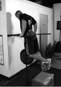 
Figure
7-45. Weighted dips, done with a dip belt and
plates.
Ring dips are best left to gymnasts or
other people at lighter bodyweights who are not training primarily for
strength. Ring dips are a dangerous movement for your shoulders, and
weighted ring dips are foolish for anybody; it doesn’t take very much
lateral movement of the rings to place the shoulder joints in a position
of such instability that it cannot be controlled. The shoulders can
easily be impinged during a dip because the load is driving the humerus
and AC joint together, and the addition of lateral moment force to the
configuration has resulted in many avoidable surgical repairs to many
rotator cuffs (see Figure 3-7). Do your shoulders a favor, and just do
your dips on bars.
Barbell
rows
First, barbell rows are not a substitute
for power cleans. If you use them for this
purpose, you have decided to omit a more important exercise in favor of
an assistance exercise, an easier movement that does not provide most of
the benefits of the more important basic exercise. I say this because of
the prevalence of this substitution since the second edition of this
book was published. Power cleans are one of the primary constituents of
the program, and barbell rows – useful as they may be to intermediate
lifters – are not.
Now that this is out of the way, let’s
get one more thing out of the way. Most people associate rows with
machines that place you in a position to do them; cable rows or the
machine version of the T-bar rows are the most common. But the most
valuable rowing exercise is the one that makes you assume the position
and maintain it throughout the set. This way, you get the benefits of
both moving the bar through the rowing motion and doing the stability
work needed to hold your back in the right position to do the rowing
motion. As with all beneficial barbell training, the more work you have
to do during the exercise, the better the exercise. So let’s learn how
to do a proper barbell row.
Barbell rows start on the floor and end
on the floor, each and every rep. The bar does not hang from the arms
between reps. Each rep is separated by a breath and a reset of the lower
back. Starting from the floor enables the hamstrings and glutes to help
get the bar moving, so that the lats and scapula retractors can finish a
heavier weight than they could from a dead hang in the arms. Done this
way, the exercise works not only the lats, upper back, and arms – the
muscles typically associated with rowing – but the low back and hip
extensors as well.
When you are rowing from the floor, the
most critical factor in technique is the position of the lower back. The
lumbar spine must be held in extension, just like it is in a deadlift
and for exactly the same reason. A major difference between rows and
deadlifts is the fact that in rows, the back angle changes as the bar
comes off the floor; the knees are already extended and are not really
involved much, so the hip extensors contribute to the initial pull from
the floor by raising the chest using the locked back, transmitting this
force to the bar. The finish occurs as the elbows bend and slam the bar
into the lower rib cage area. The bar will leave the floor from a
position directly below the scapulas, just as in a deadlift; but in a
barbell row, unlike a deadlift, the back angle will never become
vertical, and will not rise much higher than the shoulders at about
15–20 degrees above horizontal.
Approach the bar with a deadlift stance,
maybe not quite as close; light weights can be pulled in a curved bar
path to the belly as you warm up, but as the weight gets heavier,
standard pulling mechanics will prevail and the bar will operate
vertically over the mid-foot, as it does in all heavy pulling exercises.
As weight is added, the bar will adjust itself to the correct position
over the foot, whether you want it to or not. The grip width can vary
quite a bit, but a grip that’s about the same as the bench-press width
is perhaps the best place to start. With heavier weights, you can use a
hook grip or straps. Your eyes should be fixed on the floor a few feet
in front of you. Don’t look straight down, but don’t try to look
straight forward, either, because doing so will extend your neck too
much.
Take a big breath, raise the bar from
the floor with straight elbows to get it moving, and continue bringing
it up by bending your elbows and slamming the bar into the upper part of
your belly. This movement leads with the elbows, and you should think
about slamming your elbows into the ceiling. The most important part of
the technique of the barbell row is the back position: the spine must be
locked into extension, with the chest up and the lower back arched, the
whole time the bar is moving. After the bar contacts your belly, lower
the bar back to the floor, exhale and take a new breath, and reset your
back before each rep. Don’t attempt to hold the bar against your belly
at the top or lower the bar too slowly; the barbell row is like the
deadlift in that the work is intended to be mainly concentric. Since
heavier weights will essentially be dropped, you’ll want to use bumper
plates for rowing, or use rubber mats under your standard iron plates.
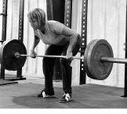
Figure
7-46. The barbell row. Each rep starts and
stops on the floor.
The row requires that the bar be started
off the floor with a hip extension, not a knee extension. With light
weights, you can perform rows with just your arms, but as you approach
work-set weights, hip extension becomes more important. Your knees will
be almost straight, just slightly unlocked, with your hips higher than
they would be in a deadlift before the bar moves up – the same position
used to start a stiff-legged deadlift – so that there is little chance
the quads can be used. The movement starts with your arms straight and
with your chest coming up, raising your back angle slightly as the bar
leaves the floor – a movement performed with the hamstrings and glutes
acting on the rigid back, which is held in isometric contraction by the
erectors. This initial hip extension starts the weight up, and your
elbows catch the momentum and carry the bar on up with a shoulder
extension and scapula retraction. The lats, triceps, biceps, forearm
muscles, posterior deltoids, and smaller muscles around the shoulder
blades are the prime movers here. The trunk muscles that stabilize the
spine enable the trunk to act as a rigid platform, against which the
force can be generated. The hamstrings and glutes, after their initial
action off the ground, act to anchor the pelvis, and therefore the lower
back, during the final rowing motion generated by the upper body. As is
so often the case in complex human movement, muscles change actions
during the course of the activity, starting off with one function and
ending with another, and the function of the hip extensors during the
barbell row is a good example of this shift.
Figure
7-47. Seen from above, the
supine-grip barbell row has the lats working across the back where the
fibers of the muscle bellies are roughly parallel to the bar.
Rows are not useful at weights so heavy
that form is hard to maintain. The finish position, when the bar touches
the belly, is controlled by some of the same factors that limit a clean,
in that a weight that can be rowed correctly may be only 15 pounds
lighter than a weight that cannot be rowed at all. A row that is not
finished will not engage the range of motion that is unique to the
exercise, and thus might as well be called a “partial SLDL.” For this
reason, sets of five or more reps are used, since weights that can be
rowed for only a triple probably cannot be done correctly anyway. As
with any ancillary exercise, it is much better to get good reps with a
lighter weight for sets of 5, 8, or 10 and do several across than to
lose the benefit of the exercise with a weight that is too
heavy.
The first few reps will use only a
slight – maybe less than 10 degrees – amount of hip extension, but as
the set progresses and the upper body becomes fatigued, more hip
extension gets thrown in to get the reps finished. Be sure to continue
doing rows and not deadlifts. Your back should never get much above
horizontal, and if your chest comes up too high on the last reps, the
bar is hitting too low, the range of motion for the target muscles has
shortened, and the weight is therefore too heavy.
As the weight gets heavy, there will be
a pronounced tendency to allow your chest to drop down to meet the bar,
completing the rep from the top down instead of from the bottom up. When
this chest drop becomes excessive, the weight is too heavy. And
“excessive” is a rather subjective concept here. Someone might decide
that no chest drop is allowable, in which case heavy weights cannot be
used in the exercise. Or someone might decide that as long as the chest
can be touched with the bar, the rep counts. This degree of variability
is one of the things that distinguish an ancillary exercise from a
primary exercise: if a large degree of variability is inherent in the
performance of an exercise, it cannot be judged effectively or
quantified objectively. For this reason, the barbell row makes a very
good ancillary exercise but a very poor contest lift.
A variation on the standard barbell row
is to supinate the grip, thus adding more biceps to the exercise. This
reverse-grip row is irritating to the elbows in inflexible people; the
rather extreme degree of external rotation of the humerus, combined with
the completely supine hand, is irritating to the forearm muscles’
insertion points on the elbows when they are flexed with a heavy weight,
even though this rotation is usually tolerated well for chin-ups. The
reverse-grip row can produce tennis or golfer’s elbow very quickly, so
if you decide to try this version of the movement, start with light
weights and cautiously work up to your heavier sets the first time or
two. And use a narrower grip than you would for the prone-grip version
to minimize the grip position problems.

Figure
7-48. The supine grip sometimes used for the
barbell row. This lifter also uses the hook grip.
Back extensions and
glute/ham raises
There are a couple of ancillary
exercises that require special equipment but are useful enough to make
it worth locating. The Roman chair is an old piece of gym equipment that
can be found in one form or another in most training facilities. It was
developed in the late 1800s by the famous physical culturist Professor
Louis “Attila” Durlacher from a device known as a “Roman column” that
served a similar function. The Roman chair is a very basic bench (a
bench has no parts that move during an exercise; a machine does) that
supports the trainee’s shins or feet from the top while supporting the
thighs from below, thus allowing the trainee to be in a horizontal
position, supported by his legs. You can use the Roman chair while
facing up for abdominal work or while facing down for back work.
Figure
7-49. A simple type of Roman chair.
Ab workouts done on this bench are
called Roman
chair sit-ups, after the device. The back
exercise has been for many years referred to as a “hyperextension,”
although that term specifically refers to a position that most joints
don’t like to be placed in, so the exercise is therefore preferably
termed simply a “back extension.” You may hear “hyperextension” used for
the exercise from time to time, but it is losing its place as more
people become familiar with biomechanical terminology.
The back extension is a very good way to
directly work the spinal erectors using both concentric and eccentric
contractions. The normal function of the trunk muscles is stabilization
of the spine, using an isometric contraction that allows little or no
relative movement of the vertebrae. But the trunk muscles can be
strengthened by the active motion of the spine during this exercise,
which functions like a reverse sit-up; the erectors extend the spine
from a flexed position over a broad range of motion. The fact that the
spine is extended in a position parallel to the floor is a function of
the simultaneous hip extension, which the glutes (all of them, the
maximus, medius, and minimus), hamstrings, and adductors perform in
coordination with the spinal extension.
You perform the back extension by
assuming a face-down position in a Roman chair, with the middle of your
thighs on the front pad, the back of your legs (just below the calves
and just above the heels, right on the Achilles tendon) jammed up into
the foot pad or roller pad, and your body held parallel to the floor.
Keep your knees very slightly unlocked but not bent, with just a little
tension from the hamstrings protecting the knees from hyperextension.
The movement is an eccentric spinal extension – just let your chest drop
down toward the upright of the bench, until your torso is perpendicular
to the floor – and then an concentric spinal extension, raising the
chest, followed by a hip extension, which kicks in the glutes and
hamstrings to finish the exercise with the torso parallel to the floor.
It is important to lead up with the chest, making it draw the back into
extension – a full arch at the top of the movement. It works the spinal
erectors, the glutes, and the upper hamstring
function.
Figure
7-50. (A) Back extensions and (B) Roman chair
sit-ups.
The glute/ham bench is a modified Roman
chair that allows the back extension to be carried on up into a
bodyweight “leg curl” in an exercise called a glute/ham
raise. Glute/ham benches are becoming more
popular as more people figure out the utility of the glute/ham raise. In
the finish position of the glute/ham raise, your torso is vertical. This
exercise thus includes all the elements of the back extension but with
lots and lots more hamstring
involvement. The modification that allows this added movement is a plate
welded onto the frame right behind the foot roller (Figure 7-51). This plate gives the feet a place to
push against, allowing a knee flexion to occur which carries the torso
and thighs on up to the vertical position. The hamstrings can do this
with the plate against the feet because they have the help of the
gastrocnemius, which cannot contribute to knee flexion unless its
proximal function is facilitated by having its distal function blocked
against the plate.
Figure
7-51. A glute/ham bench, a modified
adjustable Roman chair with toe plates for the full-range-of-motion
exercise.
Muscles that cross two joints can affect
movement around either joint. The proximal
function is that which is performed by the
joint closest to the center of the body, and the distal
function is performed on the other end of the
bone, the one farthest away. Most of the joints in the body are moved by
muscles that also attach across another joint. The hamstrings are
perhaps the most classic example because they both extend the hips and
flex the knees – the glute/ham raise causes them to do both. The gastroc
is another example of this type of muscle; it attaches to the calcaneus,
or heel bone, by the Achilles tendon, and attaches to the lateral and
medial epicondyles of the femur, behind the knee, as it splits into
right and left heads. The gastroc both extends the ankle (an action
referred to as “plantar flexion” in this particular instance) and flexes
the knee. The other major calf muscle, the soleus, shares the Achilles
tendon with the gastroc but attaches proximally to the tibia and
therefore does not cross the knee.
The glute/ham bench takes advantage of
this anatomy and gives the feet a surface to push against. The weight of
the body out in front of the forward pad traps the heels against the
roller, allowing the body to be levered up, while the tension of the
calves holds the feet against the plate. The plate blocks the ankle
extension so that the contraction of the gastrocs is transmitted to the
femoral insertions, causing the knees to flex. The glute/ham raise is
essentially a back extension until the torso is parallel to the ground,
where the hips have extended as well as the spine. Then the feet push
the plate, and the knee flexion adds to the upward momentum generated by
the back extension, carrying the torso on up to a vertical position,
with the knees flexed at 90 degrees, the back and hips in extension, and
the chest up.
Figure
7-52. The glute/ham raise is essentially a
back extension followed immediately by a bodyweight leg curl. The knee
flexion can be completed because the feet are blocked by the plate,
enabling the calf muscles to contribute their proximal function to knee
flexion. Without the plate, you won’t be able to fully flex the knees
and reach an upright position, as shown in Figure 7-53.
The glutes engage more strongly here
than they do in a simple back extension. They help generate momentum
through the transition between the back extension and the knee flexion.
Depending on the individual, the glutes might not be particularly
perceptible as they work in the exercise. The trainee might not feel the
glutes much because of the huge contribution of the hamstrings working
over a much longer range of motion, and because the glutes contract very
efficiently over a shorter distance, since their origin and insertion
points are not that far apart. The poorer the conditioning of the
athlete, especially with regard to the squat, the more noticeable the
glutes will be in this exercise. And the poorer the conditioning, the
less likely the trainee will actually be able to do an entire set of 10,
or even a complete rep. Glute/ham raises are hard at first, but get
easier very quickly as the movement pattern and the trainee’s associated
neuromuscular efficiency improve.
The movement is performed in essentially
the same way as a back extension until the spine reaches the full arched
position, which must occur in a coordinated fashion or the timing will
be off. The knees then kick in to finish raising the chest up all the
way to vertical. The best cue for this is the chest: think about raising
your chest up fast and hard, and the hamstrings, calves, and glutes will
do their job at the right time. The hands are held either crossed on the
chest, the easier way, or with fingers locked behind the head, the
harder way because more mass is farther away from the hips. Glute/hams
like to be done at higher reps; 10 to 15 for three to five sets works
best.
Figure
7-53. The glute/ham raise.
In this exercise, you are lifting the
part of your body that is in front of the pad with muscles located
behind the pad, and the more mass there is in front of the pad, the
harder the job is to do. Most glute/ham benches are adjustable between
the front and back pads for this reason, and the difficulty of the
movement can be adjusted accordingly. Set the front pad back far enough
to ensure that your crotch clears the pad, for rather obvious reasons,
and to make the exercise hard enough for you to get enough work out of
it. But be careful about setting the back pad so far forward that the
front pad is too close to your knees. This position does increase the
difficulty, but it also dramatically increases the amount of shear force
on the knees, which are, after all, only held together by the cruciate
ligaments, the capsular ligaments, and muscular tension. More-advanced
lifters can carry weight behind the neck or on the chest to increase the
work if necessary. It is much better to add load with weight than with
leverage in this exercise.
When your thighs slide or roll down the
pads, you have allowed allow your knees to bend before you have
completed the back extension. Remember: anytime the knees bend, the
hamstrings shorten. If you allow this to happen before you finish the
back-extension phase of the movement, then 1) you have contracted the
hamstrings without making them do any actual work, since they haven’t
contributed to the lifting up of the torso, and 2) you have placed them
in a position of partial contraction, where they cannot contribute a
full contraction to the exercise after the back-extension phase has
finished. Don’t
let your knees slide down from the thigh pad before your chest is up and
your hips are extended. This is the most
common error people make, and it ruins the effect of the exercise. And
for the same reason, do not do glute/ham raises on a bench constructed
with rollers for the front pad.
When you first start doing them,
glute/ham raises may be very hard. Typically, an untrained person cannot
do a complete rep all the way up to vertical. This is fine; just come up
as high as you can for each rep of the set, even though that height will
deteriorate as the set goes on. The exercise gets easier very fast, as
mentioned before, primarily because you learn how to do it more
efficiently very quickly. Within six or seven workouts, most people can
perform at least one complete rep. When you can do several sets all the
way up, add load after a warm-up set by holding a plate to your chest or
a bar behind your neck.
A good definition of “functional
exercise” is a normal human movement that can be performed under a
scalable, increasable load. By this definition, neither back extensions
of any type nor sit-ups are functional exercises. Some people have
trouble with them, taking the form of chronic back pain or a tendency to
get repeated small back injuries. The normal function of all the muscles
surrounding the spine is spinal stabilization, and the squat, press, and
all pulling exercises provide plenty of work for these muscles by
challenging their function along with those of the prime movers of the
exercise. If you are an older lifter with a degree of the normal spinal
degeneration that accompanies advancing age, you might decide that
eccentric and concentric back work and flexion-based abdominal work
cause more problems than they correct. If you are continually plagued
with lower-back injuries, try eliminating all exercises involving spinal
flexion and extension for a few weeks and see what happens to the injury
frequency. Your abs and back muscles will remain strong from doing their
primary jobs under the bar, and you’ll stop having injury problems that
interfere with your training.
Curls
Since you’re going to do them anyway, we
might as well discuss the right way to do curls. Curls are performed to
train the biceps, a muscle that commands an inordinate amount of
attention from far too many people. But that is the nature of things,
and who are we to question so fundamental a matter? Effective curls
require an awareness of the biceps anatomy and a willingness to diverge
from the conventional wisdom regarding technique.
The biceps muscle is one of the many
muscles of the body that crosses two joints. (Technically, this muscle
is the biceps
brachii, or “arm” biceps, which is distinct
from the biceps femoris, one of the
hamstring muscles.) Like its partner the triceps, the
biceps
crosses both the elbow and shoulder joints,
and therefore causes movement to occur around both joints. The chin-up
uses a combination of elbow flexion and shoulder extension. But so does
the pull-up, the difference being the prone versus supine grip. The
elbow flexion during the pull-up is performed without much biceps
involvement, while the biceps are heavily involved in the chin-up.
Figure 7-54.
Both the biceps (A) and the triceps (B)
muscles cross the elbow and shoulder joints, causing movement around
both.
This difference is due to the anatomy of
the elbow. The distal end of the biceps attaches to the radius – the
shorter of the two forearm bones – at a point called the
radial
tuberosity, located on the posterior and
medial aspects of the radius when the forearm is pronated (the palm is
facing back). “Supination” is the term given to the position in which
the hand is rotated forward and the palm is up, and the palm-up position
of the hand is referred to as “supine.” The forearm supinates when the
biceps attachment on the radius rotates inward and upward as the muscle
shortens. In fact, if the biceps are in full contraction, the hand is
supine. The pull-up, performed with a prone grip, utilizes very little
biceps – and therefore proportionately more triceps and lats – while the
chin-up uses lots of biceps. The elbow-flexion part of the pull-up is
accomplished by the other elbow flexors: the brachialis, the
brachioradialis, and some of the smaller forearm
muscles.
The biceps also performs the movement
known as shoulder flexion. Anatomical movement descriptions can
sometimes be arbitrary, and flexion in the shoulder joint is defined as
the forward and upward movement of the humerus. The biceps contributes
to this movement because the proximal attachments (yes, there are two,
thus the name biceps) are located on the
anterior (forward) side of the scapula, the main bone of the shoulder
joint. Because the tendon attachments cross the joint, the muscle moves
the joint, and shoulder flexion is therefore a biceps function.
Elbow flexion, along with shoulder
extension, is used whenever anything is grasped and pulled in toward the
body. This is why chin-ups and pull-ups are such functional exercises:
they duplicate this very normal motion under a load (Figure 7-55).
Figure
7-55. Chin-ups are an example of an exercise
involving elbow flexion (a function of the distal biceps and forearm)
and shoulder extension (a function of the lats and proximal
triceps).
In fact, elbow flexion is normally accompanied by shoulder extension;
this is the way the arm is designed to work. And this is why elbow
flexion with an immobile shoulder requires special equipment: the
preacher curl was invented for the purpose of providing a way to work
the biceps in isolation. The isolation of a single muscle group that
moves a single joint seldom contributes significantly to other, more
complex movements which include that muscle group. Remember that our
definition of “functional exercise” is a normal human movement that can
be performed under a scalable, increasable load. By this definition, no
exercise that requires a machine or specific device to perform it can be
a functional exercise (we’re not including the barbell or power rack in
the “specific device” category here, since we can’t limit our training
to the use of sticks and rocks). And if a muscle is isolated in an
exercise, its tendon attachments are, too; this fact has a bearing on
the injury-causing potential of these types of exercises.
Examples of shoulder flexion are harder
to find, since raising things overhead is generally accomplished with a
prone hand and a pressing motion that relies primarily on the deltoids
and triceps. Shoulder flexion with a supine forearm pretty much
exclusively occurs during exercise. But since the biceps do perform this
function, it should be incorporated into biceps training so that this
function gets worked – curls should involve shoulder flexion because
they can. Barbell curls allow for both elbow flexion and shoulder
flexion, they utilize a normal function of the arms, and they do not
require specialized equipment (again, the bar being considered
non-specialized). So barbell curls could be considered a functional
exercise in the strict sense of the definition.
Figure
7-56. Three ways to work the biceps. (A)
Elbow flexion in isolation: a strict curl. (B) Shoulder extension with
elbow flexion: a chin-up. (C) Elbow flexion with shoulder flexion: a
barbell curl as described in this book.
There are as many ways to do curls as
there are muscle-magazine authors. If you’re going to spend time doing
all these variations, you have missed the point of this book. Let’s
assume that you haven’t, and that you want the best way to work the most
biceps in the least time. That way is the barbell curl, done with a
standard Olympic bar. It is performed standing (since it cannot be
performed seated), and it is best done out of a rack set at the same
height that it would be for the press.
Approach the bar with a supine grip,
with the width varying between somewhat closer than shoulder width and
several inches wider. The wider the grip, the greater the degree of
supination that will be required to maintain that grip; the greater the
supination, the more the biceps will be contracted at full flexion.
Depending on individual flexibility, a grip just wider than the
shoulders will allow the full effects of the exercise to be expressed
(this will be about the same grip used for the chin-up, for the same
reasons).
Figure
7-57. The effect of forearm supination on
biceps contraction. The biceps brachii is the primary supinator of the
forearm, and the biceps is not in complete contraction unless the
forearm is fully supinated.
This version of the barbell curl starts
at the top, with your elbows in full flexion, as opposed to the more
common method of starting at the bottom with extended elbows. When the
bar is lowered to full extension and then raised back into flexion
without a pause at the bottom, the biceps get the benefit of utilizing a
stretch reflex to contract harder, thereby allowing the use of more
weight. Breathing is done only at the top, with none of the supportive
pressure released at the bottom. The elbows are kept against the rib
cage and start from a position in front of the bar.
The barbell curl, like the goodmorning,
intentionally uses a bar path that deviates from the mid-foot balance
point. You lower the weight eccentrically in an arc, away from your
body. In doing so, you create moment arms – between the bar and your
elbows, between the bar and your shoulders, and between the bar and the
mid-foot – so that you are intentionally manipulating the mechanics of
the system to create the resistance. Keep your elbows against your ribs,
in front of the mid-axial line that separates front from back. As your
elbows get almost straight at the bottom of the curl, they slide back
into a position behind this line. The elbows never straighten
completely, because doing so would mean that tension is off the biceps,
but they get close. Some tension is needed to initiate the concentric
flexion that comprises the essence of the movement, and perfectly
straight elbows make this very hard and inefficient.
Start the upward phase of the curl by
sliding your elbows forward as you move the bar in the same arc that it
moved in on the way down. Elbows stay against the ribs the whole way up;
this keeps the hands in supination by maintaining the supine position of
the forearm. A good cue for this position is to think about pushing the
medial pad of the palm – the part just above the wrist and on the
little-finger side of the hand – into the bar, as if this were the only
part of the hand in contact with the bar.
Figure
7-58. The medial chunk of the palm – the
“hypothenar eminence” (see Figure 3-10) – is the key to ensuring maximum
supination during a curl. Push the bar up while thinking about using
this part of the hand.
You will need to keep your wrists in a neutral position, neither flexed
nor extended but in a position that keeps the metacarpal bones of the
hand in line with the forearm. Drive the bar back up to the starting
position, keeping your hands supine and your elbows on your ribs. During
this upward phase, your elbows will move forward to return to their
position in front of the bar, producing shoulder flexion in addition to
elbow flexion. It is common to see the elbows leave the rib cage and
assume a position in line with, or even outside, the hands on the bar.
This error involves the deltoids in the movement and reduces the biceps’
involvement. Keep your elbows close to your ribs and make them slide
forward on the way up.
During the curl, it will be very
difficult to maintain a perfectly upright posture if you use any weight
at all. The lifter/barbell system must balance over the middle of the
foot, which means that as the bar moves forward through its arc, the
body must balance the mass of the bar by leaning back. The heavier the
weight, the more the lean. It is neither necessary, desirable, nor
possible to try to stay strictly upright during a heavy barbell curl. If
you are training for strength, you must use heavier weights, and you
will find that the physics of placing a heavy bar in front and your body
in back cannot be circumvented. Do not flex or extend your knees at all,
or let an excessive amount of upward movement out of the bottom be
initiated by the hips instead of the elbows. “Excessive” is a judgment
call – once again we see why some exercises are “ancillary.” Cheat curls
are a legitimate exercise, depending on what you want out of the
movement. If a heavy weight is started with a little hip extension and
finished with a substantial amount of unassisted elbow and shoulder
flexion, the cheat curl is probably legit. But if you start it with your
hips and knees and then dive under the bar to receive it in full elbow
flexion, you are doing a reverse-grip clean, defeating the purpose of
the exercise, risking several injuries, and inviting the criticism of
more experienced, disciplined lifters.

Figure
7-59. The barbell curl. Note the starting
position at the top with the elbows in flexion.
Triceps
exercises
Most of the triceps work that gets done
in gyms all over the world is performed on some type of cable device. In
most cases, the common “triceps pressdown” is the exercise of choice,
being the one most frequently seen in magazines and exercise books, and
being the easiest to do while looking in the mirror. But the simple
pressdown only works the distal triceps function – elbow extension – and
ignores the fact that the triceps crosses both the shoulder and the
elbow and therefore has a proximal function as well. Shoulder extension
is the proximal function, and the most efficient triceps exercises
incorporate both functions. Cable pressdowns can be done in this manner,
but they have an interesting limitation: as you get stronger, you will
eventually be able to use enough weight that your feet cannot stay on
the floor.
There is a better triceps exercise, one
that is so effective at building lockout strength for the bench press
that Larry Pacifico called it “the fourth powerlift.” It is the
lying triceps
extension (LTE), done on a flat bench in a
supine position with heavy weights. Done correctly, it is safe, brutally
hard, and very effective for general upper-body strength with an
emphasis on the triceps. Done the way many foolish people do it – as a
“skullcrusher” – it loses much of its effectiveness and safety.
The preferred equipment for the LTE is
the EZ Curl bar, a cambered bar intended for doing curls as an
alternative to using a straight bar. The EZ Curl bar was invented back
in the early 1970s by some poor bastard who probably didn’t make a dime
off of the thing. It apparently ended up with one of the big magazine
publishers who also happened to sell equipment and who started marketing
it as his own device. Typical situation.
Figure
7-60. The EZ Curl Bar, used for lying triceps
extensions.
The problem is that the EZ Curl bar
doesn’t work nearly as well for curls and for recruiting biceps
contraction as a straight bar does. As we discussed earlier, the degree
of supination of the forearm and hand directly affects the amount of
biceps in contraction. The EZ Curl bar does in fact take the stress of
supination off of the wrists and elbows, but it does so at the expense
of a good biceps contraction. The camber of the bar is specifically
intended to decrease the supination of the forearm, and anything less
than full supination results in a less-than-complete biceps
contraction.
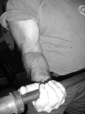
Figure
7-61. The effect of supination on biceps
contraction, and the main reason that the EZ Curl bar is best left for
triceps work.
But the EZ Curl bar works perfectly for
the lying triceps extension. The triceps is composed of three bundles of
muscles, which originate on the humerus and the scapula and share a
common insertion point on the olecranon process of the elbow. (The
lateral and medial heads of the triceps originate on the humerus; the
long head originates on the scapula.) The angle of the hand on the bar
makes no difference in the quality of the triceps contraction. The more
prone grip afforded by the EZ Curl bar is more comfortable for this
exercise and does not reduce its effectiveness.
The thing that distinguishes the LTE
from other triceps exercises is the inclusion of the proximal function
of the triceps, where the design of the movement produces shoulder
extension, using the long head of the muscle, as well as elbow
extension. It also includes the lats, some pec, costal muscle, and
abdominal involvement, and the forearms. This exercise dramatically
increases the number of other muscles activated and is the first choice
when you are adding a triceps assistance exercise to your
program.
The LTE, like the bench press, requires
a spotter at heavy weights. Take a position on the bench, with the top
of your head just past the edge of the pad. Receive the bar from the
spotter, who has deadlifted it into position, handed it to you, and
stepped back out of the way. The EZ Curl bar has three angles in the
middle; take your grip on the inside-most angle with your hands prone
(palms facing up), and the middle bend in the bar facing down. Your
elbows will be pointed down the bench in external rotation, and the bar
will be locked out over your shoulder joints, as in a bench press. Your
chest should be up, butt in contact with the bench, feet in a stable
position on the floor, and eyes looking at the ceiling for the whole rep
(Figure 7-62).


Figure
7-62. The lying triceps extension.
Unlock your elbows while keeping your
upper arms vertical, letting the bar arc backward behind your head and
toward the floor. When your elbows get to about 90 degrees, let your
shoulders rotate back to drop the bar down just above your head,
touching your hair, down to about the level of the bench. This motion
will stretch your triceps, deltoids, and lats, and when the bar is just
below the level of the back of your head, let the stretch turn the rep
around and start back up. Pull the bar back up with your elbows, and as
they approach the top, extend them to lock out the bar in the start
position.
Keep the bar as close to the top of your
head as possible while stretching down to the bench, and lead up with
the stretch reflex, like you’re throwing the bar at the ceiling and
using your elbows to start the throw. The stretch reflex adds a lot of
range of motion – and power, if you move explosively – to the movement,
making the LTE much more useful than the standard “skullcrusher.” If you
keep your elbows too straight and let the bar go back too far away from
the top of your head, you lose some of the ROM around the elbows. A big
breath at the top inflates the chest and makes the stretch reflex at the
bottom more effective. When the LTE is done in this way, both shoulder
extension and elbow extension are used, and more triceps mass is
stressed over a longer ROM. Do sets of 10–15 reps with this
exercise.
Barbell Training:
There’s Just No Substitute
There are lots of useless assistance
exercises which contribute nothing to the performance of the major
exercises or of sports activities, and which might do worse than merely
waste time. Exercises that use only one joint, and that usually require
machines to do, are non-functional in the sense that they do not follow
a normal human movement pattern. They also quite often predispose the
joint to overuse injuries, and the vast majority of weight room injuries
are produced by these exercises. This is true not only by default, since
it is obvious that in a world where most people only use machines, most
of the injuries will occur on machines. Isolation exercises cause
tendinitis because human joints are not designed to be subjected to the
stress of movements in which all of the shock, moment force, tension,
and compression are exclusively applied to one joint. There is no
movement that can be performed outside the modern health club that
involves only the quadriceps; the only way to isolate the quads is to do
an exercise on a machine designed for that purpose. This is a function
that hundreds of millions of years of vertebrate evolution did not
anticipate. The knee is the home of many muscles, all of which have
developed while working at the same time. Any exercise that deviates
from the function for which the joint is designed contributes very
little to the function of that joint and is a potential source of
problems.
Exercise machines have made several
people a lot of money, and while there’s absolutely nothing wrong with
that, they have been a very large diversion from more productive forms
of training. The pendulum swings, and barbell training is once again
being recognized as the superior form of exercise. Glad we could help.

 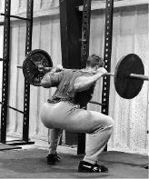
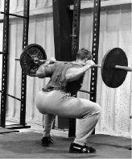 


 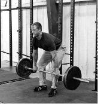
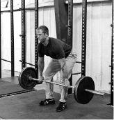